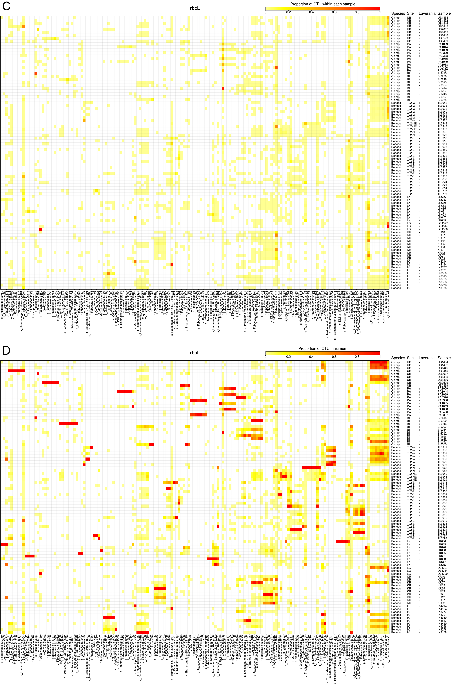
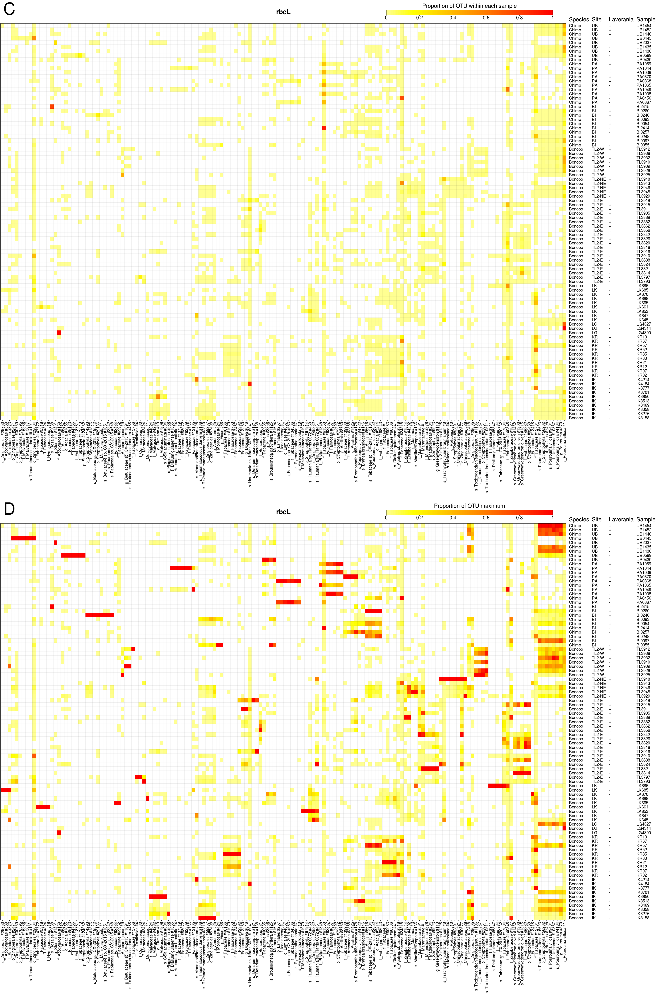

plot of chunk plantPcoaTsne
system('fastq-dump --version',intern=TRUE)## [1] "" "fastq-dump : 2.8.0" ""The SRA run table was downloaded from https://www.ncbi.nlm.nih.gov/Traces/study/?acc=SRP108776.
samples<-read.table('SraRunTable.txt',sep='\t',header=TRUE,stringsAsFactors=FALSE)
rownames(samples)<-samples$Run_s
samples[,c('sample','primer')]<-do.call(rbind,strsplit(samples$Library_Name_s,'_'))system('fastq-dump --version 2>&1',intern=TRUE)## [1] "" "fastq-dump : 2.8.0" ""if(!dir.exists('sra'))dir.create('sra')
for(ii in samples$Run_s){
outFiles<-sprintf('sra/%s_%d.fastq.gz',ii,1:2)
cmd<-sprintf('fastq-dump --gzip --split-files --outdir data %s',ii)
message(cmd)
if(any(!file.exists(outFiles)))system(cmd)
if(any(!file.exists(outFiles)))stop('fastq-dump unsucessful')
}## fastq-dump --gzip --split-files --outdir data SRR5656515## fastq-dump --gzip --split-files --outdir data SRR5656723## fastq-dump --gzip --split-files --outdir data SRR5656724## fastq-dump --gzip --split-files --outdir data SRR5656721## fastq-dump --gzip --split-files --outdir data SRR5656722## fastq-dump --gzip --split-files --outdir data SRR5656520## fastq-dump --gzip --split-files --outdir data SRR5656517## fastq-dump --gzip --split-files --outdir data SRR5656719## fastq-dump --gzip --split-files --outdir data SRR5656720## fastq-dump --gzip --split-files --outdir data SRR5656717## fastq-dump --gzip --split-files --outdir data SRR5656514## fastq-dump --gzip --split-files --outdir data SRR5656521## fastq-dump --gzip --split-files --outdir data SRR5656581## fastq-dump --gzip --split-files --outdir data SRR5656582## fastq-dump --gzip --split-files --outdir data SRR5656620## fastq-dump --gzip --split-files --outdir data SRR5656621## fastq-dump --gzip --split-files --outdir data SRR5656646## fastq-dump --gzip --split-files --outdir data SRR5656647## fastq-dump --gzip --split-files --outdir data SRR5656699## fastq-dump --gzip --split-files --outdir data SRR5656700## fastq-dump --gzip --split-files --outdir data SRR5656701## fastq-dump --gzip --split-files --outdir data SRR5656702## fastq-dump --gzip --split-files --outdir data SRR5656710## fastq-dump --gzip --split-files --outdir data SRR5656711## fastq-dump --gzip --split-files --outdir data SRR5656712## fastq-dump --gzip --split-files --outdir data SRR5656713## fastq-dump --gzip --split-files --outdir data SRR5656714## fastq-dump --gzip --split-files --outdir data SRR5656715## fastq-dump --gzip --split-files --outdir data SRR5656716## fastq-dump --gzip --split-files --outdir data SRR5656718## fastq-dump --gzip --split-files --outdir data SRR5656432## fastq-dump --gzip --split-files --outdir data SRR5656433## fastq-dump --gzip --split-files --outdir data SRR5656479## fastq-dump --gzip --split-files --outdir data SRR5656604## fastq-dump --gzip --split-files --outdir data SRR5656642## fastq-dump --gzip --split-files --outdir data SRR5656643## fastq-dump --gzip --split-files --outdir data SRR5656644## fastq-dump --gzip --split-files --outdir data SRR5656645## fastq-dump --gzip --split-files --outdir data SRR5656648## fastq-dump --gzip --split-files --outdir data SRR5656649## fastq-dump --gzip --split-files --outdir data SRR5656652## fastq-dump --gzip --split-files --outdir data SRR5656654## fastq-dump --gzip --split-files --outdir data SRR5656655## fastq-dump --gzip --split-files --outdir data SRR5656662## fastq-dump --gzip --split-files --outdir data SRR5656664## fastq-dump --gzip --split-files --outdir data SRR5656665## fastq-dump --gzip --split-files --outdir data SRR5656666## fastq-dump --gzip --split-files --outdir data SRR5656667## fastq-dump --gzip --split-files --outdir data SRR5656674## fastq-dump --gzip --split-files --outdir data SRR5656675## fastq-dump --gzip --split-files --outdir data SRR5656686## fastq-dump --gzip --split-files --outdir data SRR5656687## fastq-dump --gzip --split-files --outdir data SRR5656688## fastq-dump --gzip --split-files --outdir data SRR5656689## fastq-dump --gzip --split-files --outdir data SRR5656690## fastq-dump --gzip --split-files --outdir data SRR5656691## fastq-dump --gzip --split-files --outdir data SRR5656692## fastq-dump --gzip --split-files --outdir data SRR5656693## fastq-dump --gzip --split-files --outdir data SRR5656694## fastq-dump --gzip --split-files --outdir data SRR5656695## fastq-dump --gzip --split-files --outdir data SRR5656696## fastq-dump --gzip --split-files --outdir data SRR5656697## fastq-dump --gzip --split-files --outdir data SRR5656698## fastq-dump --gzip --split-files --outdir data SRR5656703## fastq-dump --gzip --split-files --outdir data SRR5656704## fastq-dump --gzip --split-files --outdir data SRR5656705## fastq-dump --gzip --split-files --outdir data SRR5656706## fastq-dump --gzip --split-files --outdir data SRR5656707## fastq-dump --gzip --split-files --outdir data SRR5656708## fastq-dump --gzip --split-files --outdir data SRR5656709## fastq-dump --gzip --split-files --outdir data SRR5656431## fastq-dump --gzip --split-files --outdir data SRR5656434## fastq-dump --gzip --split-files --outdir data SRR5656440## fastq-dump --gzip --split-files --outdir data SRR5656441## fastq-dump --gzip --split-files --outdir data SRR5656442## fastq-dump --gzip --split-files --outdir data SRR5656451## fastq-dump --gzip --split-files --outdir data SRR5656462## fastq-dump --gzip --split-files --outdir data SRR5656463## fastq-dump --gzip --split-files --outdir data SRR5656464## fastq-dump --gzip --split-files --outdir data SRR5656465## fastq-dump --gzip --split-files --outdir data SRR5656483## fastq-dump --gzip --split-files --outdir data SRR5656488## fastq-dump --gzip --split-files --outdir data SRR5656489## fastq-dump --gzip --split-files --outdir data SRR5656490## fastq-dump --gzip --split-files --outdir data SRR5656491## fastq-dump --gzip --split-files --outdir data SRR5656492## fastq-dump --gzip --split-files --outdir data SRR5656493## fastq-dump --gzip --split-files --outdir data SRR5656497## fastq-dump --gzip --split-files --outdir data SRR5656498## fastq-dump --gzip --split-files --outdir data SRR5656499## fastq-dump --gzip --split-files --outdir data SRR5656500## fastq-dump --gzip --split-files --outdir data SRR5656501## fastq-dump --gzip --split-files --outdir data SRR5656512## fastq-dump --gzip --split-files --outdir data SRR5656513## fastq-dump --gzip --split-files --outdir data SRR5656524## fastq-dump --gzip --split-files --outdir data SRR5656525## fastq-dump --gzip --split-files --outdir data SRR5656528## fastq-dump --gzip --split-files --outdir data SRR5656529## fastq-dump --gzip --split-files --outdir data SRR5656535## fastq-dump --gzip --split-files --outdir data SRR5656544## fastq-dump --gzip --split-files --outdir data SRR5656545## fastq-dump --gzip --split-files --outdir data SRR5656546## fastq-dump --gzip --split-files --outdir data SRR5656548## fastq-dump --gzip --split-files --outdir data SRR5656566## fastq-dump --gzip --split-files --outdir data SRR5656568## fastq-dump --gzip --split-files --outdir data SRR5656579## fastq-dump --gzip --split-files --outdir data SRR5656601## fastq-dump --gzip --split-files --outdir data SRR5656602## fastq-dump --gzip --split-files --outdir data SRR5656603## fastq-dump --gzip --split-files --outdir data SRR5656612## fastq-dump --gzip --split-files --outdir data SRR5656619## fastq-dump --gzip --split-files --outdir data SRR5656629## fastq-dump --gzip --split-files --outdir data SRR5656630## fastq-dump --gzip --split-files --outdir data SRR5656631## fastq-dump --gzip --split-files --outdir data SRR5656632## fastq-dump --gzip --split-files --outdir data SRR5656633## fastq-dump --gzip --split-files --outdir data SRR5656634## fastq-dump --gzip --split-files --outdir data SRR5656635## fastq-dump --gzip --split-files --outdir data SRR5656636## fastq-dump --gzip --split-files --outdir data SRR5656637## fastq-dump --gzip --split-files --outdir data SRR5656638## fastq-dump --gzip --split-files --outdir data SRR5656639## fastq-dump --gzip --split-files --outdir data SRR5656640## fastq-dump --gzip --split-files --outdir data SRR5656641## fastq-dump --gzip --split-files --outdir data SRR5656650## fastq-dump --gzip --split-files --outdir data SRR5656651## fastq-dump --gzip --split-files --outdir data SRR5656653## fastq-dump --gzip --split-files --outdir data SRR5656656## fastq-dump --gzip --split-files --outdir data SRR5656657## fastq-dump --gzip --split-files --outdir data SRR5656658## fastq-dump --gzip --split-files --outdir data SRR5656659## fastq-dump --gzip --split-files --outdir data SRR5656660## fastq-dump --gzip --split-files --outdir data SRR5656661## fastq-dump --gzip --split-files --outdir data SRR5656663## fastq-dump --gzip --split-files --outdir data SRR5656668## fastq-dump --gzip --split-files --outdir data SRR5656669## fastq-dump --gzip --split-files --outdir data SRR5656670## fastq-dump --gzip --split-files --outdir data SRR5656671## fastq-dump --gzip --split-files --outdir data SRR5656672## fastq-dump --gzip --split-files --outdir data SRR5656673## fastq-dump --gzip --split-files --outdir data SRR5656676## fastq-dump --gzip --split-files --outdir data SRR5656677## fastq-dump --gzip --split-files --outdir data SRR5656678## fastq-dump --gzip --split-files --outdir data SRR5656679## fastq-dump --gzip --split-files --outdir data SRR5656680## fastq-dump --gzip --split-files --outdir data SRR5656681## fastq-dump --gzip --split-files --outdir data SRR5656682## fastq-dump --gzip --split-files --outdir data SRR5656683## fastq-dump --gzip --split-files --outdir data SRR5656684## fastq-dump --gzip --split-files --outdir data SRR5656685## fastq-dump --gzip --split-files --outdir data SRR5656435## fastq-dump --gzip --split-files --outdir data SRR5656436## fastq-dump --gzip --split-files --outdir data SRR5656437## fastq-dump --gzip --split-files --outdir data SRR5656438## fastq-dump --gzip --split-files --outdir data SRR5656439## fastq-dump --gzip --split-files --outdir data SRR5656443## fastq-dump --gzip --split-files --outdir data SRR5656444## fastq-dump --gzip --split-files --outdir data SRR5656445## fastq-dump --gzip --split-files --outdir data SRR5656446## fastq-dump --gzip --split-files --outdir data SRR5656447## fastq-dump --gzip --split-files --outdir data SRR5656448## fastq-dump --gzip --split-files --outdir data SRR5656449## fastq-dump --gzip --split-files --outdir data SRR5656450## fastq-dump --gzip --split-files --outdir data SRR5656452## fastq-dump --gzip --split-files --outdir data SRR5656453## fastq-dump --gzip --split-files --outdir data SRR5656454## fastq-dump --gzip --split-files --outdir data SRR5656455## fastq-dump --gzip --split-files --outdir data SRR5656456## fastq-dump --gzip --split-files --outdir data SRR5656457## fastq-dump --gzip --split-files --outdir data SRR5656458## fastq-dump --gzip --split-files --outdir data SRR5656459## fastq-dump --gzip --split-files --outdir data SRR5656460## fastq-dump --gzip --split-files --outdir data SRR5656461## fastq-dump --gzip --split-files --outdir data SRR5656466## fastq-dump --gzip --split-files --outdir data SRR5656467## fastq-dump --gzip --split-files --outdir data SRR5656468## fastq-dump --gzip --split-files --outdir data SRR5656469## fastq-dump --gzip --split-files --outdir data SRR5656470## fastq-dump --gzip --split-files --outdir data SRR5656471## fastq-dump --gzip --split-files --outdir data SRR5656472## fastq-dump --gzip --split-files --outdir data SRR5656473## fastq-dump --gzip --split-files --outdir data SRR5656474## fastq-dump --gzip --split-files --outdir data SRR5656475## fastq-dump --gzip --split-files --outdir data SRR5656476## fastq-dump --gzip --split-files --outdir data SRR5656477## fastq-dump --gzip --split-files --outdir data SRR5656478## fastq-dump --gzip --split-files --outdir data SRR5656480## fastq-dump --gzip --split-files --outdir data SRR5656481## fastq-dump --gzip --split-files --outdir data SRR5656482## fastq-dump --gzip --split-files --outdir data SRR5656484## fastq-dump --gzip --split-files --outdir data SRR5656485## fastq-dump --gzip --split-files --outdir data SRR5656486## fastq-dump --gzip --split-files --outdir data SRR5656487## fastq-dump --gzip --split-files --outdir data SRR5656494## fastq-dump --gzip --split-files --outdir data SRR5656495## fastq-dump --gzip --split-files --outdir data SRR5656496## fastq-dump --gzip --split-files --outdir data SRR5656502## fastq-dump --gzip --split-files --outdir data SRR5656503## fastq-dump --gzip --split-files --outdir data SRR5656504## fastq-dump --gzip --split-files --outdir data SRR5656505## fastq-dump --gzip --split-files --outdir data SRR5656506## fastq-dump --gzip --split-files --outdir data SRR5656507## fastq-dump --gzip --split-files --outdir data SRR5656508## fastq-dump --gzip --split-files --outdir data SRR5656509## fastq-dump --gzip --split-files --outdir data SRR5656510## fastq-dump --gzip --split-files --outdir data SRR5656511## fastq-dump --gzip --split-files --outdir data SRR5656516## fastq-dump --gzip --split-files --outdir data SRR5656518## fastq-dump --gzip --split-files --outdir data SRR5656519## fastq-dump --gzip --split-files --outdir data SRR5656522## fastq-dump --gzip --split-files --outdir data SRR5656523## fastq-dump --gzip --split-files --outdir data SRR5656526## fastq-dump --gzip --split-files --outdir data SRR5656527## fastq-dump --gzip --split-files --outdir data SRR5656530## fastq-dump --gzip --split-files --outdir data SRR5656531## fastq-dump --gzip --split-files --outdir data SRR5656532## fastq-dump --gzip --split-files --outdir data SRR5656533## fastq-dump --gzip --split-files --outdir data SRR5656534## fastq-dump --gzip --split-files --outdir data SRR5656536## fastq-dump --gzip --split-files --outdir data SRR5656537## fastq-dump --gzip --split-files --outdir data SRR5656538## fastq-dump --gzip --split-files --outdir data SRR5656539## fastq-dump --gzip --split-files --outdir data SRR5656540## fastq-dump --gzip --split-files --outdir data SRR5656541## fastq-dump --gzip --split-files --outdir data SRR5656542## fastq-dump --gzip --split-files --outdir data SRR5656543## fastq-dump --gzip --split-files --outdir data SRR5656547## fastq-dump --gzip --split-files --outdir data SRR5656549## fastq-dump --gzip --split-files --outdir data SRR5656550## fastq-dump --gzip --split-files --outdir data SRR5656551## fastq-dump --gzip --split-files --outdir data SRR5656552## fastq-dump --gzip --split-files --outdir data SRR5656553## fastq-dump --gzip --split-files --outdir data SRR5656554## fastq-dump --gzip --split-files --outdir data SRR5656555## fastq-dump --gzip --split-files --outdir data SRR5656556## fastq-dump --gzip --split-files --outdir data SRR5656557## fastq-dump --gzip --split-files --outdir data SRR5656558## fastq-dump --gzip --split-files --outdir data SRR5656559## fastq-dump --gzip --split-files --outdir data SRR5656560## fastq-dump --gzip --split-files --outdir data SRR5656561## fastq-dump --gzip --split-files --outdir data SRR5656562## fastq-dump --gzip --split-files --outdir data SRR5656563## fastq-dump --gzip --split-files --outdir data SRR5656564## fastq-dump --gzip --split-files --outdir data SRR5656565## fastq-dump --gzip --split-files --outdir data SRR5656567## fastq-dump --gzip --split-files --outdir data SRR5656569## fastq-dump --gzip --split-files --outdir data SRR5656570## fastq-dump --gzip --split-files --outdir data SRR5656571## fastq-dump --gzip --split-files --outdir data SRR5656572## fastq-dump --gzip --split-files --outdir data SRR5656573## fastq-dump --gzip --split-files --outdir data SRR5656574## fastq-dump --gzip --split-files --outdir data SRR5656575## fastq-dump --gzip --split-files --outdir data SRR5656576## fastq-dump --gzip --split-files --outdir data SRR5656577## fastq-dump --gzip --split-files --outdir data SRR5656578## fastq-dump --gzip --split-files --outdir data SRR5656580## fastq-dump --gzip --split-files --outdir data SRR5656583## fastq-dump --gzip --split-files --outdir data SRR5656584## fastq-dump --gzip --split-files --outdir data SRR5656585## fastq-dump --gzip --split-files --outdir data SRR5656586## fastq-dump --gzip --split-files --outdir data SRR5656587## fastq-dump --gzip --split-files --outdir data SRR5656588## fastq-dump --gzip --split-files --outdir data SRR5656589## fastq-dump --gzip --split-files --outdir data SRR5656590## fastq-dump --gzip --split-files --outdir data SRR5656591## fastq-dump --gzip --split-files --outdir data SRR5656592## fastq-dump --gzip --split-files --outdir data SRR5656593## fastq-dump --gzip --split-files --outdir data SRR5656594## fastq-dump --gzip --split-files --outdir data SRR5656595## fastq-dump --gzip --split-files --outdir data SRR5656596## fastq-dump --gzip --split-files --outdir data SRR5656597## fastq-dump --gzip --split-files --outdir data SRR5656598## fastq-dump --gzip --split-files --outdir data SRR5656599## fastq-dump --gzip --split-files --outdir data SRR5656600## fastq-dump --gzip --split-files --outdir data SRR5656605## fastq-dump --gzip --split-files --outdir data SRR5656606## fastq-dump --gzip --split-files --outdir data SRR5656607## fastq-dump --gzip --split-files --outdir data SRR5656608## fastq-dump --gzip --split-files --outdir data SRR5656609## fastq-dump --gzip --split-files --outdir data SRR5656610## fastq-dump --gzip --split-files --outdir data SRR5656611## fastq-dump --gzip --split-files --outdir data SRR5656613## fastq-dump --gzip --split-files --outdir data SRR5656614## fastq-dump --gzip --split-files --outdir data SRR5656615## fastq-dump --gzip --split-files --outdir data SRR5656616## fastq-dump --gzip --split-files --outdir data SRR5656617## fastq-dump --gzip --split-files --outdir data SRR5656618## fastq-dump --gzip --split-files --outdir data SRR5656622## fastq-dump --gzip --split-files --outdir data SRR5656623## fastq-dump --gzip --split-files --outdir data SRR5656624## fastq-dump --gzip --split-files --outdir data SRR5656625## fastq-dump --gzip --split-files --outdir data SRR5656626## fastq-dump --gzip --split-files --outdir data SRR5656627## fastq-dump --gzip --split-files --outdir data SRR5656628if(!dir.exists('16s/data'))dir.create('16s/data')
if(!dir.exists('data'))dir.create('data')
for(ii in samples$Run_s){
sraNames<-sprintf('sra/%s_%d.fastq.gz',ii,1:2)
newNames<-sprintf('%s/%s_%s_R%d_.fastq.gz', ifelse(samples[ii,'primer']=='16s','16s/data','data'),
samples[ii,'sample'], samples[ii,'primer'], 1:2)
message('Moving ',paste(sraNames,collapse=' '),' to ',paste(newNames,collapse=' '))
file.rename(sraNames,newNames)
}## Moving sra/SRR5656515_1.fastq.gz sra/SRR5656515_2.fastq.gz to 16s/data/TL3814_16s_R1_.fastq.gz 16s/data/TL3814_16s_R2_.fastq.gz## Moving sra/SRR5656723_1.fastq.gz sra/SRR5656723_2.fastq.gz to data/TL3814_matK_R1_.fastq.gz data/TL3814_matK_R2_.fastq.gz## Moving sra/SRR5656724_1.fastq.gz sra/SRR5656724_2.fastq.gz to data/TL3814_rbcL_R1_.fastq.gz data/TL3814_rbcL_R2_.fastq.gz## Moving sra/SRR5656721_1.fastq.gz sra/SRR5656721_2.fastq.gz to data/TL3816_matK_R1_.fastq.gz data/TL3816_matK_R2_.fastq.gz## Moving sra/SRR5656722_1.fastq.gz sra/SRR5656722_2.fastq.gz to data/TL3816_rbcL_R1_.fastq.gz data/TL3816_rbcL_R2_.fastq.gz## Moving sra/SRR5656520_1.fastq.gz sra/SRR5656520_2.fastq.gz to 16s/data/TL3816_16s_R1_.fastq.gz 16s/data/TL3816_16s_R2_.fastq.gz## Moving sra/SRR5656517_1.fastq.gz sra/SRR5656517_2.fastq.gz to 16s/data/TL3793_16s_R1_.fastq.gz 16s/data/TL3793_16s_R2_.fastq.gz## Moving sra/SRR5656719_1.fastq.gz sra/SRR5656719_2.fastq.gz to data/TL3793_matK_R1_.fastq.gz data/TL3793_matK_R2_.fastq.gz## Moving sra/SRR5656720_1.fastq.gz sra/SRR5656720_2.fastq.gz to data/TL3793_rbcL_R1_.fastq.gz data/TL3793_rbcL_R2_.fastq.gz## Moving sra/SRR5656717_1.fastq.gz sra/SRR5656717_2.fastq.gz to data/TL3797_matK_R1_.fastq.gz data/TL3797_matK_R2_.fastq.gz## Moving sra/SRR5656514_1.fastq.gz sra/SRR5656514_2.fastq.gz to 16s/data/TL3797_16s_R1_.fastq.gz 16s/data/TL3797_16s_R2_.fastq.gz## Moving sra/SRR5656521_1.fastq.gz sra/SRR5656521_2.fastq.gz to 16s/data/TL3820_16s_R1_.fastq.gz 16s/data/TL3820_16s_R2_.fastq.gz## Moving sra/SRR5656581_1.fastq.gz sra/SRR5656581_2.fastq.gz to data/TL3943_rbcL_R1_.fastq.gz data/TL3943_rbcL_R2_.fastq.gz## Moving sra/SRR5656582_1.fastq.gz sra/SRR5656582_2.fastq.gz to data/TL3943_matK_R1_.fastq.gz data/TL3943_matK_R2_.fastq.gz## Moving sra/SRR5656620_1.fastq.gz sra/SRR5656620_2.fastq.gz to data/TL3944_matK_R1_.fastq.gz data/TL3944_matK_R2_.fastq.gz## Moving sra/SRR5656621_1.fastq.gz sra/SRR5656621_2.fastq.gz to data/TL3944_rbcL_R1_.fastq.gz data/TL3944_rbcL_R2_.fastq.gz## Moving sra/SRR5656646_1.fastq.gz sra/SRR5656646_2.fastq.gz to data/IK3358_rbcL_R1_.fastq.gz data/IK3358_rbcL_R2_.fastq.gz## Moving sra/SRR5656647_1.fastq.gz sra/SRR5656647_2.fastq.gz to data/IK3358_matK_R1_.fastq.gz data/IK3358_matK_R2_.fastq.gz## Moving sra/SRR5656699_1.fastq.gz sra/SRR5656699_2.fastq.gz to data/TL3946_matK_R1_.fastq.gz data/TL3946_matK_R2_.fastq.gz## Moving sra/SRR5656700_1.fastq.gz sra/SRR5656700_2.fastq.gz to data/TL3946_rbcL_R1_.fastq.gz data/TL3946_rbcL_R2_.fastq.gz## Moving sra/SRR5656701_1.fastq.gz sra/SRR5656701_2.fastq.gz to data/TL3945_matK_R1_.fastq.gz data/TL3945_matK_R2_.fastq.gz## Moving sra/SRR5656702_1.fastq.gz sra/SRR5656702_2.fastq.gz to data/TL3945_rbcL_R1_.fastq.gz data/TL3945_rbcL_R2_.fastq.gz## Moving sra/SRR5656710_1.fastq.gz sra/SRR5656710_2.fastq.gz to 16s/data/IK3358_16s_R1_.fastq.gz 16s/data/IK3358_16s_R2_.fastq.gz## Moving sra/SRR5656711_1.fastq.gz sra/SRR5656711_2.fastq.gz to 16s/data/TL3944_16s_R1_.fastq.gz 16s/data/TL3944_16s_R2_.fastq.gz## Moving sra/SRR5656712_1.fastq.gz sra/SRR5656712_2.fastq.gz to 16s/data/TL3943_16s_R1_.fastq.gz 16s/data/TL3943_16s_R2_.fastq.gz## Moving sra/SRR5656713_1.fastq.gz sra/SRR5656713_2.fastq.gz to 16s/data/TL3946_16s_R1_.fastq.gz 16s/data/TL3946_16s_R2_.fastq.gz## Moving sra/SRR5656714_1.fastq.gz sra/SRR5656714_2.fastq.gz to 16s/data/TL3945_16s_R1_.fastq.gz 16s/data/TL3945_16s_R2_.fastq.gz## Moving sra/SRR5656715_1.fastq.gz sra/SRR5656715_2.fastq.gz to data/TL3820_matK_R1_.fastq.gz data/TL3820_matK_R2_.fastq.gz## Moving sra/SRR5656716_1.fastq.gz sra/SRR5656716_2.fastq.gz to data/TL3820_rbcL_R1_.fastq.gz data/TL3820_rbcL_R2_.fastq.gz## Moving sra/SRR5656718_1.fastq.gz sra/SRR5656718_2.fastq.gz to data/TL3797_rbcL_R1_.fastq.gz data/TL3797_rbcL_R2_.fastq.gz## Moving sra/SRR5656432_1.fastq.gz sra/SRR5656432_2.fastq.gz to 16s/data/BI0260_16s_R1_.fastq.gz 16s/data/BI0260_16s_R2_.fastq.gz## Moving sra/SRR5656433_1.fastq.gz sra/SRR5656433_2.fastq.gz to 16s/data/BI2414_16s_R1_.fastq.gz 16s/data/BI2414_16s_R2_.fastq.gz## Moving sra/SRR5656479_1.fastq.gz sra/SRR5656479_2.fastq.gz to 16s/data/IK4184_16s_R1_.fastq.gz 16s/data/IK4184_16s_R2_.fastq.gz## Moving sra/SRR5656604_1.fastq.gz sra/SRR5656604_2.fastq.gz to data/IK4184_matK_R1_.fastq.gz data/IK4184_matK_R2_.fastq.gz## Moving sra/SRR5656642_1.fastq.gz sra/SRR5656642_2.fastq.gz to data/IK3158_rbcL_R1_.fastq.gz data/IK3158_rbcL_R2_.fastq.gz## Moving sra/SRR5656643_1.fastq.gz sra/SRR5656643_2.fastq.gz to data/IK3158_matK_R1_.fastq.gz data/IK3158_matK_R2_.fastq.gz## Moving sra/SRR5656644_1.fastq.gz sra/SRR5656644_2.fastq.gz to data/IK3276_rbcL_R1_.fastq.gz data/IK3276_rbcL_R2_.fastq.gz## Moving sra/SRR5656645_1.fastq.gz sra/SRR5656645_2.fastq.gz to data/IK3276_matK_R1_.fastq.gz data/IK3276_matK_R2_.fastq.gz## Moving sra/SRR5656648_1.fastq.gz sra/SRR5656648_2.fastq.gz to data/IK3469_rbcL_R1_.fastq.gz data/IK3469_rbcL_R2_.fastq.gz## Moving sra/SRR5656649_1.fastq.gz sra/SRR5656649_2.fastq.gz to data/IK3469_matK_R1_.fastq.gz data/IK3469_matK_R2_.fastq.gz## Moving sra/SRR5656652_1.fastq.gz sra/SRR5656652_2.fastq.gz to data/UB1452_rbcL_R1_.fastq.gz data/UB1452_rbcL_R2_.fastq.gz## Moving sra/SRR5656654_1.fastq.gz sra/SRR5656654_2.fastq.gz to data/UB1454_rbcL_R1_.fastq.gz data/UB1454_rbcL_R2_.fastq.gz## Moving sra/SRR5656655_1.fastq.gz sra/SRR5656655_2.fastq.gz to data/UB1454_matK_R1_.fastq.gz data/UB1454_matK_R2_.fastq.gz## Moving sra/SRR5656662_1.fastq.gz sra/SRR5656662_2.fastq.gz to 16s/data/BI2415_16s_R1_.fastq.gz 16s/data/BI2415_16s_R2_.fastq.gz## Moving sra/SRR5656664_1.fastq.gz sra/SRR5656664_2.fastq.gz to data/UB2037_rbcL_R1_.fastq.gz data/UB2037_rbcL_R2_.fastq.gz## Moving sra/SRR5656665_1.fastq.gz sra/SRR5656665_2.fastq.gz to data/UB2037_matK_R1_.fastq.gz data/UB2037_matK_R2_.fastq.gz## Moving sra/SRR5656666_1.fastq.gz sra/SRR5656666_2.fastq.gz to 16s/data/BI0248_16s_R1_.fastq.gz 16s/data/BI0248_16s_R2_.fastq.gz## Moving sra/SRR5656667_1.fastq.gz sra/SRR5656667_2.fastq.gz to 16s/data/BI0257_16s_R1_.fastq.gz 16s/data/BI0257_16s_R2_.fastq.gz## Moving sra/SRR5656674_1.fastq.gz sra/SRR5656674_2.fastq.gz to data/BI0054_matK_R1_.fastq.gz data/BI0054_matK_R2_.fastq.gz## Moving sra/SRR5656675_1.fastq.gz sra/SRR5656675_2.fastq.gz to data/BI0054_rbcL_R1_.fastq.gz data/BI0054_rbcL_R2_.fastq.gz## Moving sra/SRR5656686_1.fastq.gz sra/SRR5656686_2.fastq.gz to 16s/data/UB1454_16s_R1_.fastq.gz 16s/data/UB1454_16s_R2_.fastq.gz## Moving sra/SRR5656687_1.fastq.gz sra/SRR5656687_2.fastq.gz to 16s/data/UB2037_16s_R1_.fastq.gz 16s/data/UB2037_16s_R2_.fastq.gz## Moving sra/SRR5656688_1.fastq.gz sra/SRR5656688_2.fastq.gz to data/BI2415_matK_R1_.fastq.gz data/BI2415_matK_R2_.fastq.gz## Moving sra/SRR5656689_1.fastq.gz sra/SRR5656689_2.fastq.gz to data/BI2415_rbcL_R1_.fastq.gz data/BI2415_rbcL_R2_.fastq.gz## Moving sra/SRR5656690_1.fastq.gz sra/SRR5656690_2.fastq.gz to data/BI0260_matK_R1_.fastq.gz data/BI0260_matK_R2_.fastq.gz## Moving sra/SRR5656691_1.fastq.gz sra/SRR5656691_2.fastq.gz to data/BI0260_rbcL_R1_.fastq.gz data/BI0260_rbcL_R2_.fastq.gz## Moving sra/SRR5656692_1.fastq.gz sra/SRR5656692_2.fastq.gz to data/BI2414_matK_R1_.fastq.gz data/BI2414_matK_R2_.fastq.gz## Moving sra/SRR5656693_1.fastq.gz sra/SRR5656693_2.fastq.gz to data/BI2414_rbcL_R1_.fastq.gz data/BI2414_rbcL_R2_.fastq.gz## Moving sra/SRR5656694_1.fastq.gz sra/SRR5656694_2.fastq.gz to data/BI0248_matK_R1_.fastq.gz data/BI0248_matK_R2_.fastq.gz## Moving sra/SRR5656695_1.fastq.gz sra/SRR5656695_2.fastq.gz to data/BI0248_rbcL_R1_.fastq.gz data/BI0248_rbcL_R2_.fastq.gz## Moving sra/SRR5656696_1.fastq.gz sra/SRR5656696_2.fastq.gz to data/BI0257_matK_R1_.fastq.gz data/BI0257_matK_R2_.fastq.gz## Moving sra/SRR5656697_1.fastq.gz sra/SRR5656697_2.fastq.gz to data/BI0257_rbcL_R1_.fastq.gz data/BI0257_rbcL_R2_.fastq.gz## Moving sra/SRR5656698_1.fastq.gz sra/SRR5656698_2.fastq.gz to data/IK4184_rbcL_R1_.fastq.gz data/IK4184_rbcL_R2_.fastq.gz## Moving sra/SRR5656703_1.fastq.gz sra/SRR5656703_2.fastq.gz to 16s/data/IK3276_16s_R1_.fastq.gz 16s/data/IK3276_16s_R2_.fastq.gz## Moving sra/SRR5656704_1.fastq.gz sra/SRR5656704_2.fastq.gz to 16s/data/IK3158_16s_R1_.fastq.gz 16s/data/IK3158_16s_R2_.fastq.gz## Moving sra/SRR5656705_1.fastq.gz sra/SRR5656705_2.fastq.gz to data/TL3948_matK_R1_.fastq.gz data/TL3948_matK_R2_.fastq.gz## Moving sra/SRR5656706_1.fastq.gz sra/SRR5656706_2.fastq.gz to data/TL3948_rbcL_R1_.fastq.gz data/TL3948_rbcL_R2_.fastq.gz## Moving sra/SRR5656707_1.fastq.gz sra/SRR5656707_2.fastq.gz to 16s/data/BI0054_16s_R1_.fastq.gz 16s/data/BI0054_16s_R2_.fastq.gz## Moving sra/SRR5656708_1.fastq.gz sra/SRR5656708_2.fastq.gz to 16s/data/TL3948_16s_R1_.fastq.gz 16s/data/TL3948_16s_R2_.fastq.gz## Moving sra/SRR5656709_1.fastq.gz sra/SRR5656709_2.fastq.gz to 16s/data/IK3469_16s_R1_.fastq.gz 16s/data/IK3469_16s_R2_.fastq.gz## Moving sra/SRR5656431_1.fastq.gz sra/SRR5656431_2.fastq.gz to 16s/data/PA1038_16s_R1_.fastq.gz 16s/data/PA1038_16s_R2_.fastq.gz## Moving sra/SRR5656434_1.fastq.gz sra/SRR5656434_2.fastq.gz to 16s/data/PA1059_16s_R1_.fastq.gz 16s/data/PA1059_16s_R2_.fastq.gz## Moving sra/SRR5656440_1.fastq.gz sra/SRR5656440_2.fastq.gz to data/LK682_rbcL_R1_.fastq.gz data/LK682_rbcL_R2_.fastq.gz## Moving sra/SRR5656441_1.fastq.gz sra/SRR5656441_2.fastq.gz to data/LK682_matK_R1_.fastq.gz data/LK682_matK_R2_.fastq.gz## Moving sra/SRR5656442_1.fastq.gz sra/SRR5656442_2.fastq.gz to data/BI0097_matK_R1_.fastq.gz data/BI0097_matK_R2_.fastq.gz## Moving sra/SRR5656451_1.fastq.gz sra/SRR5656451_2.fastq.gz to 16s/data/KR57_16s_R1_.fastq.gz 16s/data/KR57_16s_R2_.fastq.gz## Moving sra/SRR5656462_1.fastq.gz sra/SRR5656462_2.fastq.gz to data/BI0055_matK_R1_.fastq.gz data/BI0055_matK_R2_.fastq.gz## Moving sra/SRR5656463_1.fastq.gz sra/SRR5656463_2.fastq.gz to data/TL3842_rbcL_R1_.fastq.gz data/TL3842_rbcL_R2_.fastq.gz## Moving sra/SRR5656464_1.fastq.gz sra/SRR5656464_2.fastq.gz to data/TL3842_matK_R1_.fastq.gz data/TL3842_matK_R2_.fastq.gz## Moving sra/SRR5656465_1.fastq.gz sra/SRR5656465_2.fastq.gz to data/BI0055_rbcL_R1_.fastq.gz data/BI0055_rbcL_R2_.fastq.gz## Moving sra/SRR5656483_1.fastq.gz sra/SRR5656483_2.fastq.gz to 16s/data/IK3513_16s_R1_.fastq.gz 16s/data/IK3513_16s_R2_.fastq.gz## Moving sra/SRR5656488_1.fastq.gz sra/SRR5656488_2.fastq.gz to data/TL3889_matK_R1_.fastq.gz data/TL3889_matK_R2_.fastq.gz## Moving sra/SRR5656489_1.fastq.gz sra/SRR5656489_2.fastq.gz to data/TL3889_rbcL_R1_.fastq.gz data/TL3889_rbcL_R2_.fastq.gz## Moving sra/SRR5656490_1.fastq.gz sra/SRR5656490_2.fastq.gz to data/TL3856_matK_R1_.fastq.gz data/TL3856_matK_R2_.fastq.gz## Moving sra/SRR5656491_1.fastq.gz sra/SRR5656491_2.fastq.gz to data/TL3856_rbcL_R1_.fastq.gz data/TL3856_rbcL_R2_.fastq.gz## Moving sra/SRR5656492_1.fastq.gz sra/SRR5656492_2.fastq.gz to data/TL3862_matK_R1_.fastq.gz data/TL3862_matK_R2_.fastq.gz## Moving sra/SRR5656493_1.fastq.gz sra/SRR5656493_2.fastq.gz to data/TL3862_rbcL_R1_.fastq.gz data/TL3862_rbcL_R2_.fastq.gz## Moving sra/SRR5656497_1.fastq.gz sra/SRR5656497_2.fastq.gz to 16s/data/PA1065_16s_R1_.fastq.gz 16s/data/PA1065_16s_R2_.fastq.gz## Moving sra/SRR5656498_1.fastq.gz sra/SRR5656498_2.fastq.gz to data/TL3905_matK_R1_.fastq.gz data/TL3905_matK_R2_.fastq.gz## Moving sra/SRR5656499_1.fastq.gz sra/SRR5656499_2.fastq.gz to data/TL3905_rbcL_R1_.fastq.gz data/TL3905_rbcL_R2_.fastq.gz## Moving sra/SRR5656500_1.fastq.gz sra/SRR5656500_2.fastq.gz to 16s/data/PA1044_16s_R1_.fastq.gz 16s/data/PA1044_16s_R2_.fastq.gz## Moving sra/SRR5656501_1.fastq.gz sra/SRR5656501_2.fastq.gz to 16s/data/PA1039_16s_R1_.fastq.gz 16s/data/PA1039_16s_R2_.fastq.gz## Moving sra/SRR5656512_1.fastq.gz sra/SRR5656512_2.fastq.gz to data/PA1038_rbcL_R1_.fastq.gz data/PA1038_rbcL_R2_.fastq.gz## Moving sra/SRR5656513_1.fastq.gz sra/SRR5656513_2.fastq.gz to data/PA0367_matK_R1_.fastq.gz data/PA0367_matK_R2_.fastq.gz## Moving sra/SRR5656524_1.fastq.gz sra/SRR5656524_2.fastq.gz to data/TL3910_rbcL_R1_.fastq.gz data/TL3910_rbcL_R2_.fastq.gz## Moving sra/SRR5656525_1.fastq.gz sra/SRR5656525_2.fastq.gz to data/TL3910_matK_R1_.fastq.gz data/TL3910_matK_R2_.fastq.gz## Moving sra/SRR5656528_1.fastq.gz sra/SRR5656528_2.fastq.gz to data/TL3915_rbcL_R1_.fastq.gz data/TL3915_rbcL_R2_.fastq.gz## Moving sra/SRR5656529_1.fastq.gz sra/SRR5656529_2.fastq.gz to data/TL3915_matK_R1_.fastq.gz data/TL3915_matK_R2_.fastq.gz## Moving sra/SRR5656535_1.fastq.gz sra/SRR5656535_2.fastq.gz to data/PA0367_rbcL_R1_.fastq.gz data/PA0367_rbcL_R2_.fastq.gz## Moving sra/SRR5656544_1.fastq.gz sra/SRR5656544_2.fastq.gz to 16s/data/UB1435_16s_R1_.fastq.gz 16s/data/UB1435_16s_R2_.fastq.gz## Moving sra/SRR5656545_1.fastq.gz sra/SRR5656545_2.fastq.gz to data/KR57_rbcL_R1_.fastq.gz data/KR57_rbcL_R2_.fastq.gz## Moving sra/SRR5656546_1.fastq.gz sra/SRR5656546_2.fastq.gz to data/LK685_matK_R1_.fastq.gz data/LK685_matK_R2_.fastq.gz## Moving sra/SRR5656548_1.fastq.gz sra/SRR5656548_2.fastq.gz to data/PA0368_matK_R1_.fastq.gz data/PA0368_matK_R2_.fastq.gz## Moving sra/SRR5656566_1.fastq.gz sra/SRR5656566_2.fastq.gz to 16s/data/PA1049_16s_R1_.fastq.gz 16s/data/PA1049_16s_R2_.fastq.gz## Moving sra/SRR5656568_1.fastq.gz sra/SRR5656568_2.fastq.gz to data/PA0368_rbcL_R1_.fastq.gz data/PA0368_rbcL_R2_.fastq.gz## Moving sra/SRR5656579_1.fastq.gz sra/SRR5656579_2.fastq.gz to data/LK685_rbcL_R1_.fastq.gz data/LK685_rbcL_R2_.fastq.gz## Moving sra/SRR5656601_1.fastq.gz sra/SRR5656601_2.fastq.gz to data/PA0370_matK_R1_.fastq.gz data/PA0370_matK_R2_.fastq.gz## Moving sra/SRR5656602_1.fastq.gz sra/SRR5656602_2.fastq.gz to data/PA0456_rbcL_R1_.fastq.gz data/PA0456_rbcL_R2_.fastq.gz## Moving sra/SRR5656603_1.fastq.gz sra/SRR5656603_2.fastq.gz to data/PA0370_rbcL_R1_.fastq.gz data/PA0370_rbcL_R2_.fastq.gz## Moving sra/SRR5656612_1.fastq.gz sra/SRR5656612_2.fastq.gz to 16s/data/PA0456_16s_R1_.fastq.gz 16s/data/PA0456_16s_R2_.fastq.gz## Moving sra/SRR5656619_1.fastq.gz sra/SRR5656619_2.fastq.gz to 16s/data/BI0097_16s_R1_.fastq.gz 16s/data/BI0097_16s_R2_.fastq.gz## Moving sra/SRR5656629_1.fastq.gz sra/SRR5656629_2.fastq.gz to 16s/data/TL3862_16s_R1_.fastq.gz 16s/data/TL3862_16s_R2_.fastq.gz## Moving sra/SRR5656630_1.fastq.gz sra/SRR5656630_2.fastq.gz to 16s/data/TL3856_16s_R1_.fastq.gz 16s/data/TL3856_16s_R2_.fastq.gz## Moving sra/SRR5656631_1.fastq.gz sra/SRR5656631_2.fastq.gz to 16s/data/TL3842_16s_R1_.fastq.gz 16s/data/TL3842_16s_R2_.fastq.gz## Moving sra/SRR5656632_1.fastq.gz sra/SRR5656632_2.fastq.gz to 16s/data/LK685_16s_R1_.fastq.gz 16s/data/LK685_16s_R2_.fastq.gz## Moving sra/SRR5656633_1.fastq.gz sra/SRR5656633_2.fastq.gz to 16s/data/TL3910_16s_R1_.fastq.gz 16s/data/TL3910_16s_R2_.fastq.gz## Moving sra/SRR5656634_1.fastq.gz sra/SRR5656634_2.fastq.gz to 16s/data/TL3905_16s_R1_.fastq.gz 16s/data/TL3905_16s_R2_.fastq.gz## Moving sra/SRR5656635_1.fastq.gz sra/SRR5656635_2.fastq.gz to 16s/data/TL3889_16s_R1_.fastq.gz 16s/data/TL3889_16s_R2_.fastq.gz## Moving sra/SRR5656636_1.fastq.gz sra/SRR5656636_2.fastq.gz to 16s/data/LK682_16s_R1_.fastq.gz 16s/data/LK682_16s_R2_.fastq.gz## Moving sra/SRR5656637_1.fastq.gz sra/SRR5656637_2.fastq.gz to 16s/data/TL3915_16s_R1_.fastq.gz 16s/data/TL3915_16s_R2_.fastq.gz## Moving sra/SRR5656638_1.fastq.gz sra/SRR5656638_2.fastq.gz to 16s/data/BI0093_16s_R1_.fastq.gz 16s/data/BI0093_16s_R2_.fastq.gz## Moving sra/SRR5656639_1.fastq.gz sra/SRR5656639_2.fastq.gz to 16s/data/BI0055_16s_R1_.fastq.gz 16s/data/BI0055_16s_R2_.fastq.gz## Moving sra/SRR5656640_1.fastq.gz sra/SRR5656640_2.fastq.gz to data/PA0456_matK_R1_.fastq.gz data/PA0456_matK_R2_.fastq.gz## Moving sra/SRR5656641_1.fastq.gz sra/SRR5656641_2.fastq.gz to data/PA1038_matK_R1_.fastq.gz data/PA1038_matK_R2_.fastq.gz## Moving sra/SRR5656650_1.fastq.gz sra/SRR5656650_2.fastq.gz to data/IK3513_rbcL_R1_.fastq.gz data/IK3513_rbcL_R2_.fastq.gz## Moving sra/SRR5656651_1.fastq.gz sra/SRR5656651_2.fastq.gz to data/IK3513_matK_R1_.fastq.gz data/IK3513_matK_R2_.fastq.gz## Moving sra/SRR5656653_1.fastq.gz sra/SRR5656653_2.fastq.gz to data/UB1452_matK_R1_.fastq.gz data/UB1452_matK_R2_.fastq.gz## Moving sra/SRR5656656_1.fastq.gz sra/SRR5656656_2.fastq.gz to data/UB1435_rbcL_R1_.fastq.gz data/UB1435_rbcL_R2_.fastq.gz## Moving sra/SRR5656657_1.fastq.gz sra/SRR5656657_2.fastq.gz to data/UB1435_matK_R1_.fastq.gz data/UB1435_matK_R2_.fastq.gz## Moving sra/SRR5656658_1.fastq.gz sra/SRR5656658_2.fastq.gz to data/UB1446_rbcL_R1_.fastq.gz data/UB1446_rbcL_R2_.fastq.gz## Moving sra/SRR5656659_1.fastq.gz sra/SRR5656659_2.fastq.gz to data/UB1446_matK_R1_.fastq.gz data/UB1446_matK_R2_.fastq.gz## Moving sra/SRR5656660_1.fastq.gz sra/SRR5656660_2.fastq.gz to 16s/data/PA0368_16s_R1_.fastq.gz 16s/data/PA0368_16s_R2_.fastq.gz## Moving sra/SRR5656661_1.fastq.gz sra/SRR5656661_2.fastq.gz to 16s/data/PA0370_16s_R1_.fastq.gz 16s/data/PA0370_16s_R2_.fastq.gz## Moving sra/SRR5656663_1.fastq.gz sra/SRR5656663_2.fastq.gz to 16s/data/PA0367_16s_R1_.fastq.gz 16s/data/PA0367_16s_R2_.fastq.gz## Moving sra/SRR5656668_1.fastq.gz sra/SRR5656668_2.fastq.gz to data/KR57_matK_R1_.fastq.gz data/KR57_matK_R2_.fastq.gz## Moving sra/SRR5656669_1.fastq.gz sra/SRR5656669_2.fastq.gz to data/BI0097_rbcL_R1_.fastq.gz data/BI0097_rbcL_R2_.fastq.gz## Moving sra/SRR5656670_1.fastq.gz sra/SRR5656670_2.fastq.gz to data/BI0093_matK_R1_.fastq.gz data/BI0093_matK_R2_.fastq.gz## Moving sra/SRR5656671_1.fastq.gz sra/SRR5656671_2.fastq.gz to data/BI0093_rbcL_R1_.fastq.gz data/BI0093_rbcL_R2_.fastq.gz## Moving sra/SRR5656672_1.fastq.gz sra/SRR5656672_2.fastq.gz to data/PA1065_rbcL_R1_.fastq.gz data/PA1065_rbcL_R2_.fastq.gz## Moving sra/SRR5656673_1.fastq.gz sra/SRR5656673_2.fastq.gz to data/PA1065_matK_R1_.fastq.gz data/PA1065_matK_R2_.fastq.gz## Moving sra/SRR5656676_1.fastq.gz sra/SRR5656676_2.fastq.gz to data/PA1049_rbcL_R1_.fastq.gz data/PA1049_rbcL_R2_.fastq.gz## Moving sra/SRR5656677_1.fastq.gz sra/SRR5656677_2.fastq.gz to data/PA1049_matK_R1_.fastq.gz data/PA1049_matK_R2_.fastq.gz## Moving sra/SRR5656678_1.fastq.gz sra/SRR5656678_2.fastq.gz to data/PA1059_rbcL_R1_.fastq.gz data/PA1059_rbcL_R2_.fastq.gz## Moving sra/SRR5656679_1.fastq.gz sra/SRR5656679_2.fastq.gz to data/PA1059_matK_R1_.fastq.gz data/PA1059_matK_R2_.fastq.gz## Moving sra/SRR5656680_1.fastq.gz sra/SRR5656680_2.fastq.gz to data/PA1039_rbcL_R1_.fastq.gz data/PA1039_rbcL_R2_.fastq.gz## Moving sra/SRR5656681_1.fastq.gz sra/SRR5656681_2.fastq.gz to data/PA1039_matK_R1_.fastq.gz data/PA1039_matK_R2_.fastq.gz## Moving sra/SRR5656682_1.fastq.gz sra/SRR5656682_2.fastq.gz to data/PA1044_rbcL_R1_.fastq.gz data/PA1044_rbcL_R2_.fastq.gz## Moving sra/SRR5656683_1.fastq.gz sra/SRR5656683_2.fastq.gz to data/PA1044_matK_R1_.fastq.gz data/PA1044_matK_R2_.fastq.gz## Moving sra/SRR5656684_1.fastq.gz sra/SRR5656684_2.fastq.gz to 16s/data/UB1446_16s_R1_.fastq.gz 16s/data/UB1446_16s_R2_.fastq.gz## Moving sra/SRR5656685_1.fastq.gz sra/SRR5656685_2.fastq.gz to 16s/data/UB1452_16s_R1_.fastq.gz 16s/data/UB1452_16s_R2_.fastq.gz## Moving sra/SRR5656435_1.fastq.gz sra/SRR5656435_2.fastq.gz to data/BI0246_rbcL_R1_.fastq.gz data/BI0246_rbcL_R2_.fastq.gz## Moving sra/SRR5656436_1.fastq.gz sra/SRR5656436_2.fastq.gz to data/BI0246_matK_R1_.fastq.gz data/BI0246_matK_R2_.fastq.gz## Moving sra/SRR5656437_1.fastq.gz sra/SRR5656437_2.fastq.gz to 16s/data/TL3916_16s_R1_.fastq.gz 16s/data/TL3916_16s_R2_.fastq.gz## Moving sra/SRR5656438_1.fastq.gz sra/SRR5656438_2.fastq.gz to 16s/data/LG4314_16s_R1_.fastq.gz 16s/data/LG4314_16s_R2_.fastq.gz## Moving sra/SRR5656439_1.fastq.gz sra/SRR5656439_2.fastq.gz to 16s/data/LG4322_16s_R1_.fastq.gz 16s/data/LG4322_16s_R2_.fastq.gz## Moving sra/SRR5656443_1.fastq.gz sra/SRR5656443_2.fastq.gz to data/LK670_matK_R1_.fastq.gz data/LK670_matK_R2_.fastq.gz## Moving sra/SRR5656444_1.fastq.gz sra/SRR5656444_2.fastq.gz to data/LK668_rbcL_R1_.fastq.gz data/LK668_rbcL_R2_.fastq.gz## Moving sra/SRR5656445_1.fastq.gz sra/SRR5656445_2.fastq.gz to data/LK668_matK_R1_.fastq.gz data/LK668_matK_R2_.fastq.gz## Moving sra/SRR5656446_1.fastq.gz sra/SRR5656446_2.fastq.gz to 16s/data/KR12_16s_R1_.fastq.gz 16s/data/KR12_16s_R2_.fastq.gz## Moving sra/SRR5656447_1.fastq.gz sra/SRR5656447_2.fastq.gz to 16s/data/KR21_16s_R1_.fastq.gz 16s/data/KR21_16s_R2_.fastq.gz## Moving sra/SRR5656448_1.fastq.gz sra/SRR5656448_2.fastq.gz to 16s/data/KR33_16s_R1_.fastq.gz 16s/data/KR33_16s_R2_.fastq.gz## Moving sra/SRR5656449_1.fastq.gz sra/SRR5656449_2.fastq.gz to 16s/data/KR35_16s_R1_.fastq.gz 16s/data/KR35_16s_R2_.fastq.gz## Moving sra/SRR5656450_1.fastq.gz sra/SRR5656450_2.fastq.gz to 16s/data/KR52_16s_R1_.fastq.gz 16s/data/KR52_16s_R2_.fastq.gz## Moving sra/SRR5656452_1.fastq.gz sra/SRR5656452_2.fastq.gz to 16s/data/KR67_16s_R1_.fastq.gz 16s/data/KR67_16s_R2_.fastq.gz## Moving sra/SRR5656453_1.fastq.gz sra/SRR5656453_2.fastq.gz to 16s/data/LG4300_16s_R1_.fastq.gz 16s/data/LG4300_16s_R2_.fastq.gz## Moving sra/SRR5656454_1.fastq.gz sra/SRR5656454_2.fastq.gz to data/TL3838_rbcL_R1_.fastq.gz data/TL3838_rbcL_R2_.fastq.gz## Moving sra/SRR5656455_1.fastq.gz sra/SRR5656455_2.fastq.gz to data/TL3838_matK_R1_.fastq.gz data/TL3838_matK_R2_.fastq.gz## Moving sra/SRR5656456_1.fastq.gz sra/SRR5656456_2.fastq.gz to data/TL3826_rbcL_R1_.fastq.gz data/TL3826_rbcL_R2_.fastq.gz## Moving sra/SRR5656457_1.fastq.gz sra/SRR5656457_2.fastq.gz to data/TL3826_matK_R1_.fastq.gz data/TL3826_matK_R2_.fastq.gz## Moving sra/SRR5656458_1.fastq.gz sra/SRR5656458_2.fastq.gz to data/TL3824_rbcL_R1_.fastq.gz data/TL3824_rbcL_R2_.fastq.gz## Moving sra/SRR5656459_1.fastq.gz sra/SRR5656459_2.fastq.gz to data/TL3824_matK_R1_.fastq.gz data/TL3824_matK_R2_.fastq.gz## Moving sra/SRR5656460_1.fastq.gz sra/SRR5656460_2.fastq.gz to data/TL3821_rbcL_R1_.fastq.gz data/TL3821_rbcL_R2_.fastq.gz## Moving sra/SRR5656461_1.fastq.gz sra/SRR5656461_2.fastq.gz to data/TL3821_matK_R1_.fastq.gz data/TL3821_matK_R2_.fastq.gz## Moving sra/SRR5656466_1.fastq.gz sra/SRR5656466_2.fastq.gz to data/LK665_rbcL_R1_.fastq.gz data/LK665_rbcL_R2_.fastq.gz## Moving sra/SRR5656467_1.fastq.gz sra/SRR5656467_2.fastq.gz to data/LK647_matK_R1_.fastq.gz data/LK647_matK_R2_.fastq.gz## Moving sra/SRR5656468_1.fastq.gz sra/SRR5656468_2.fastq.gz to data/LK647_rbcL_R1_.fastq.gz data/LK647_rbcL_R2_.fastq.gz## Moving sra/SRR5656469_1.fastq.gz sra/SRR5656469_2.fastq.gz to data/LK645_matK_R1_.fastq.gz data/LK645_matK_R2_.fastq.gz## Moving sra/SRR5656470_1.fastq.gz sra/SRR5656470_2.fastq.gz to data/LK645_rbcL_R1_.fastq.gz data/LK645_rbcL_R2_.fastq.gz## Moving sra/SRR5656471_1.fastq.gz sra/SRR5656471_2.fastq.gz to data/LK661_matK_R1_.fastq.gz data/LK661_matK_R2_.fastq.gz## Moving sra/SRR5656472_1.fastq.gz sra/SRR5656472_2.fastq.gz to data/LK661_rbcL_R1_.fastq.gz data/LK661_rbcL_R2_.fastq.gz## Moving sra/SRR5656473_1.fastq.gz sra/SRR5656473_2.fastq.gz to data/LK653_matK_R1_.fastq.gz data/LK653_matK_R2_.fastq.gz## Moving sra/SRR5656474_1.fastq.gz sra/SRR5656474_2.fastq.gz to data/LK653_rbcL_R1_.fastq.gz data/LK653_rbcL_R2_.fastq.gz## Moving sra/SRR5656475_1.fastq.gz sra/SRR5656475_2.fastq.gz to data/LK665_matK_R1_.fastq.gz data/LK665_matK_R2_.fastq.gz## Moving sra/SRR5656476_1.fastq.gz sra/SRR5656476_2.fastq.gz to 16s/data/KR05_16s_R1_.fastq.gz 16s/data/KR05_16s_R2_.fastq.gz## Moving sra/SRR5656477_1.fastq.gz sra/SRR5656477_2.fastq.gz to 16s/data/KR02_16s_R1_.fastq.gz 16s/data/KR02_16s_R2_.fastq.gz## Moving sra/SRR5656478_1.fastq.gz sra/SRR5656478_2.fastq.gz to 16s/data/IK4214_16s_R1_.fastq.gz 16s/data/IK4214_16s_R2_.fastq.gz## Moving sra/SRR5656480_1.fastq.gz sra/SRR5656480_2.fastq.gz to 16s/data/IK3777_16s_R1_.fastq.gz 16s/data/IK3777_16s_R2_.fastq.gz## Moving sra/SRR5656481_1.fastq.gz sra/SRR5656481_2.fastq.gz to 16s/data/IK3701_16s_R1_.fastq.gz 16s/data/IK3701_16s_R2_.fastq.gz## Moving sra/SRR5656482_1.fastq.gz sra/SRR5656482_2.fastq.gz to 16s/data/IK3650_16s_R1_.fastq.gz 16s/data/IK3650_16s_R2_.fastq.gz## Moving sra/SRR5656484_1.fastq.gz sra/SRR5656484_2.fastq.gz to 16s/data/KR10_16s_R1_.fastq.gz 16s/data/KR10_16s_R2_.fastq.gz## Moving sra/SRR5656485_1.fastq.gz sra/SRR5656485_2.fastq.gz to 16s/data/KR07_16s_R1_.fastq.gz 16s/data/KR07_16s_R2_.fastq.gz## Moving sra/SRR5656486_1.fastq.gz sra/SRR5656486_2.fastq.gz to data/TL3882_matK_R1_.fastq.gz data/TL3882_matK_R2_.fastq.gz## Moving sra/SRR5656487_1.fastq.gz sra/SRR5656487_2.fastq.gz to data/TL3882_rbcL_R1_.fastq.gz data/TL3882_rbcL_R2_.fastq.gz## Moving sra/SRR5656494_1.fastq.gz sra/SRR5656494_2.fastq.gz to 16s/data/UB0599_16s_R1_.fastq.gz 16s/data/UB0599_16s_R2_.fastq.gz## Moving sra/SRR5656495_1.fastq.gz sra/SRR5656495_2.fastq.gz to 16s/data/UB0445_16s_R1_.fastq.gz 16s/data/UB0445_16s_R2_.fastq.gz## Moving sra/SRR5656496_1.fastq.gz sra/SRR5656496_2.fastq.gz to 16s/data/UB0439_16s_R1_.fastq.gz 16s/data/UB0439_16s_R2_.fastq.gz## Moving sra/SRR5656502_1.fastq.gz sra/SRR5656502_2.fastq.gz to data/LG4314_rbcL_R1_.fastq.gz data/LG4314_rbcL_R2_.fastq.gz## Moving sra/SRR5656503_1.fastq.gz sra/SRR5656503_2.fastq.gz to data/LG4314_matK_R1_.fastq.gz data/LG4314_matK_R2_.fastq.gz## Moving sra/SRR5656504_1.fastq.gz sra/SRR5656504_2.fastq.gz to data/LG4322_rbcL_R1_.fastq.gz data/LG4322_rbcL_R2_.fastq.gz## Moving sra/SRR5656505_1.fastq.gz sra/SRR5656505_2.fastq.gz to data/LG4322_matK_R1_.fastq.gz data/LG4322_matK_R2_.fastq.gz## Moving sra/SRR5656506_1.fastq.gz sra/SRR5656506_2.fastq.gz to data/KR67_rbcL_R1_.fastq.gz data/KR67_rbcL_R2_.fastq.gz## Moving sra/SRR5656507_1.fastq.gz sra/SRR5656507_2.fastq.gz to data/KR67_matK_R1_.fastq.gz data/KR67_matK_R2_.fastq.gz## Moving sra/SRR5656508_1.fastq.gz sra/SRR5656508_2.fastq.gz to data/LG4300_rbcL_R1_.fastq.gz data/LG4300_rbcL_R2_.fastq.gz## Moving sra/SRR5656509_1.fastq.gz sra/SRR5656509_2.fastq.gz to data/LG4300_matK_R1_.fastq.gz data/LG4300_matK_R2_.fastq.gz## Moving sra/SRR5656510_1.fastq.gz sra/SRR5656510_2.fastq.gz to data/LG4327_rbcL_R1_.fastq.gz data/LG4327_rbcL_R2_.fastq.gz## Moving sra/SRR5656511_1.fastq.gz sra/SRR5656511_2.fastq.gz to data/LG4327_matK_R1_.fastq.gz data/LG4327_matK_R2_.fastq.gz## Moving sra/SRR5656516_1.fastq.gz sra/SRR5656516_2.fastq.gz to 16s/data/LK686_16s_R1_.fastq.gz 16s/data/LK686_16s_R2_.fastq.gz## Moving sra/SRR5656518_1.fastq.gz sra/SRR5656518_2.fastq.gz to 16s/data/TL3821_16s_R1_.fastq.gz 16s/data/TL3821_16s_R2_.fastq.gz## Moving sra/SRR5656519_1.fastq.gz sra/SRR5656519_2.fastq.gz to 16s/data/TL3824_16s_R1_.fastq.gz 16s/data/TL3824_16s_R2_.fastq.gz## Moving sra/SRR5656522_1.fastq.gz sra/SRR5656522_2.fastq.gz to 16s/data/TL3826_16s_R1_.fastq.gz 16s/data/TL3826_16s_R2_.fastq.gz## Moving sra/SRR5656523_1.fastq.gz sra/SRR5656523_2.fastq.gz to 16s/data/TL3838_16s_R1_.fastq.gz 16s/data/TL3838_16s_R2_.fastq.gz## Moving sra/SRR5656526_1.fastq.gz sra/SRR5656526_2.fastq.gz to data/TL3911_rbcL_R1_.fastq.gz data/TL3911_rbcL_R2_.fastq.gz## Moving sra/SRR5656527_1.fastq.gz sra/SRR5656527_2.fastq.gz to data/TL3911_matK_R1_.fastq.gz data/TL3911_matK_R2_.fastq.gz## Moving sra/SRR5656530_1.fastq.gz sra/SRR5656530_2.fastq.gz to data/TL3916_rbcL_R1_.fastq.gz data/TL3916_rbcL_R2_.fastq.gz## Moving sra/SRR5656531_1.fastq.gz sra/SRR5656531_2.fastq.gz to data/TL3916_matK_R1_.fastq.gz data/TL3916_matK_R2_.fastq.gz## Moving sra/SRR5656532_1.fastq.gz sra/SRR5656532_2.fastq.gz to data/TL3918_rbcL_R1_.fastq.gz data/TL3918_rbcL_R2_.fastq.gz## Moving sra/SRR5656533_1.fastq.gz sra/SRR5656533_2.fastq.gz to data/TL3918_matK_R1_.fastq.gz data/TL3918_matK_R2_.fastq.gz## Moving sra/SRR5656534_1.fastq.gz sra/SRR5656534_2.fastq.gz to 16s/data/TL3911_16s_R1_.fastq.gz 16s/data/TL3911_16s_R2_.fastq.gz## Moving sra/SRR5656536_1.fastq.gz sra/SRR5656536_2.fastq.gz to data/KR21_matK_R1_.fastq.gz data/KR21_matK_R2_.fastq.gz## Moving sra/SRR5656537_1.fastq.gz sra/SRR5656537_2.fastq.gz to data/KR21_rbcL_R1_.fastq.gz data/KR21_rbcL_R2_.fastq.gz## Moving sra/SRR5656538_1.fastq.gz sra/SRR5656538_2.fastq.gz to data/KR33_matK_R1_.fastq.gz data/KR33_matK_R2_.fastq.gz## Moving sra/SRR5656539_1.fastq.gz sra/SRR5656539_2.fastq.gz to data/KR33_rbcL_R1_.fastq.gz data/KR33_rbcL_R2_.fastq.gz## Moving sra/SRR5656540_1.fastq.gz sra/SRR5656540_2.fastq.gz to data/KR35_matK_R1_.fastq.gz data/KR35_matK_R2_.fastq.gz## Moving sra/SRR5656541_1.fastq.gz sra/SRR5656541_2.fastq.gz to data/KR35_rbcL_R1_.fastq.gz data/KR35_rbcL_R2_.fastq.gz## Moving sra/SRR5656542_1.fastq.gz sra/SRR5656542_2.fastq.gz to data/KR52_matK_R1_.fastq.gz data/KR52_matK_R2_.fastq.gz## Moving sra/SRR5656543_1.fastq.gz sra/SRR5656543_2.fastq.gz to data/KR52_rbcL_R1_.fastq.gz data/KR52_rbcL_R2_.fastq.gz## Moving sra/SRR5656547_1.fastq.gz sra/SRR5656547_2.fastq.gz to 16s/data/UB1430_16s_R1_.fastq.gz 16s/data/UB1430_16s_R2_.fastq.gz## Moving sra/SRR5656549_1.fastq.gz sra/SRR5656549_2.fastq.gz to data/LK670_rbcL_R1_.fastq.gz data/LK670_rbcL_R2_.fastq.gz## Moving sra/SRR5656550_1.fastq.gz sra/SRR5656550_2.fastq.gz to 16s/data/LK645_16s_R1_.fastq.gz 16s/data/LK645_16s_R2_.fastq.gz## Moving sra/SRR5656551_1.fastq.gz sra/SRR5656551_2.fastq.gz to 16s/data/LG4327_16s_R1_.fastq.gz 16s/data/LG4327_16s_R2_.fastq.gz## Moving sra/SRR5656552_1.fastq.gz sra/SRR5656552_2.fastq.gz to 16s/data/LK653_16s_R1_.fastq.gz 16s/data/LK653_16s_R2_.fastq.gz## Moving sra/SRR5656553_1.fastq.gz sra/SRR5656553_2.fastq.gz to 16s/data/LK647_16s_R1_.fastq.gz 16s/data/LK647_16s_R2_.fastq.gz## Moving sra/SRR5656554_1.fastq.gz sra/SRR5656554_2.fastq.gz to 16s/data/LK665_16s_R1_.fastq.gz 16s/data/LK665_16s_R2_.fastq.gz## Moving sra/SRR5656555_1.fastq.gz sra/SRR5656555_2.fastq.gz to 16s/data/LK661_16s_R1_.fastq.gz 16s/data/LK661_16s_R2_.fastq.gz## Moving sra/SRR5656556_1.fastq.gz sra/SRR5656556_2.fastq.gz to data/TL3932_matK_R1_.fastq.gz data/TL3932_matK_R2_.fastq.gz## Moving sra/SRR5656557_1.fastq.gz sra/SRR5656557_2.fastq.gz to data/TL3932_rbcL_R1_.fastq.gz data/TL3932_rbcL_R2_.fastq.gz## Moving sra/SRR5656558_1.fastq.gz sra/SRR5656558_2.fastq.gz to data/TL3929_matK_R1_.fastq.gz data/TL3929_matK_R2_.fastq.gz## Moving sra/SRR5656559_1.fastq.gz sra/SRR5656559_2.fastq.gz to data/TL3929_rbcL_R1_.fastq.gz data/TL3929_rbcL_R2_.fastq.gz## Moving sra/SRR5656560_1.fastq.gz sra/SRR5656560_2.fastq.gz to data/TL3927_matK_R1_.fastq.gz data/TL3927_matK_R2_.fastq.gz## Moving sra/SRR5656561_1.fastq.gz sra/SRR5656561_2.fastq.gz to data/TL3927_rbcL_R1_.fastq.gz data/TL3927_rbcL_R2_.fastq.gz## Moving sra/SRR5656562_1.fastq.gz sra/SRR5656562_2.fastq.gz to data/TL3926_matK_R1_.fastq.gz data/TL3926_matK_R2_.fastq.gz## Moving sra/SRR5656563_1.fastq.gz sra/SRR5656563_2.fastq.gz to data/TL3926_rbcL_R1_.fastq.gz data/TL3926_rbcL_R2_.fastq.gz## Moving sra/SRR5656564_1.fastq.gz sra/SRR5656564_2.fastq.gz to data/TL3925_matK_R1_.fastq.gz data/TL3925_matK_R2_.fastq.gz## Moving sra/SRR5656565_1.fastq.gz sra/SRR5656565_2.fastq.gz to data/TL3925_rbcL_R1_.fastq.gz data/TL3925_rbcL_R2_.fastq.gz## Moving sra/SRR5656567_1.fastq.gz sra/SRR5656567_2.fastq.gz to 16s/data/TL3939_16s_R1_.fastq.gz 16s/data/TL3939_16s_R2_.fastq.gz## Moving sra/SRR5656569_1.fastq.gz sra/SRR5656569_2.fastq.gz to data/KR05_rbcL_R1_.fastq.gz data/KR05_rbcL_R2_.fastq.gz## Moving sra/SRR5656570_1.fastq.gz sra/SRR5656570_2.fastq.gz to data/KR05_matK_R1_.fastq.gz data/KR05_matK_R2_.fastq.gz## Moving sra/SRR5656571_1.fastq.gz sra/SRR5656571_2.fastq.gz to data/KR02_rbcL_R1_.fastq.gz data/KR02_rbcL_R2_.fastq.gz## Moving sra/SRR5656572_1.fastq.gz sra/SRR5656572_2.fastq.gz to data/KR02_matK_R1_.fastq.gz data/KR02_matK_R2_.fastq.gz## Moving sra/SRR5656573_1.fastq.gz sra/SRR5656573_2.fastq.gz to data/KR10_rbcL_R1_.fastq.gz data/KR10_rbcL_R2_.fastq.gz## Moving sra/SRR5656574_1.fastq.gz sra/SRR5656574_2.fastq.gz to data/KR10_matK_R1_.fastq.gz data/KR10_matK_R2_.fastq.gz## Moving sra/SRR5656575_1.fastq.gz sra/SRR5656575_2.fastq.gz to data/KR07_rbcL_R1_.fastq.gz data/KR07_rbcL_R2_.fastq.gz## Moving sra/SRR5656576_1.fastq.gz sra/SRR5656576_2.fastq.gz to data/KR07_matK_R1_.fastq.gz data/KR07_matK_R2_.fastq.gz## Moving sra/SRR5656577_1.fastq.gz sra/SRR5656577_2.fastq.gz to data/KR12_rbcL_R1_.fastq.gz data/KR12_rbcL_R2_.fastq.gz## Moving sra/SRR5656578_1.fastq.gz sra/SRR5656578_2.fastq.gz to data/KR12_matK_R1_.fastq.gz data/KR12_matK_R2_.fastq.gz## Moving sra/SRR5656580_1.fastq.gz sra/SRR5656580_2.fastq.gz to data/LK686_matK_R1_.fastq.gz data/LK686_matK_R2_.fastq.gz## Moving sra/SRR5656583_1.fastq.gz sra/SRR5656583_2.fastq.gz to data/TL3939_rbcL_R1_.fastq.gz data/TL3939_rbcL_R2_.fastq.gz## Moving sra/SRR5656584_1.fastq.gz sra/SRR5656584_2.fastq.gz to data/TL3939_matK_R1_.fastq.gz data/TL3939_matK_R2_.fastq.gz## Moving sra/SRR5656585_1.fastq.gz sra/SRR5656585_2.fastq.gz to data/TL3936_rbcL_R1_.fastq.gz data/TL3936_rbcL_R2_.fastq.gz## Moving sra/SRR5656586_1.fastq.gz sra/SRR5656586_2.fastq.gz to data/TL3936_matK_R1_.fastq.gz data/TL3936_matK_R2_.fastq.gz## Moving sra/SRR5656587_1.fastq.gz sra/SRR5656587_2.fastq.gz to data/TL3942_rbcL_R1_.fastq.gz data/TL3942_rbcL_R2_.fastq.gz## Moving sra/SRR5656588_1.fastq.gz sra/SRR5656588_2.fastq.gz to data/TL3942_matK_R1_.fastq.gz data/TL3942_matK_R2_.fastq.gz## Moving sra/SRR5656589_1.fastq.gz sra/SRR5656589_2.fastq.gz to data/TL3940_rbcL_R1_.fastq.gz data/TL3940_rbcL_R2_.fastq.gz## Moving sra/SRR5656590_1.fastq.gz sra/SRR5656590_2.fastq.gz to data/TL3940_matK_R1_.fastq.gz data/TL3940_matK_R2_.fastq.gz## Moving sra/SRR5656591_1.fastq.gz sra/SRR5656591_2.fastq.gz to 16s/data/TL3929_16s_R1_.fastq.gz 16s/data/TL3929_16s_R2_.fastq.gz## Moving sra/SRR5656592_1.fastq.gz sra/SRR5656592_2.fastq.gz to 16s/data/TL3932_16s_R1_.fastq.gz 16s/data/TL3932_16s_R2_.fastq.gz## Moving sra/SRR5656593_1.fastq.gz sra/SRR5656593_2.fastq.gz to 16s/data/TL3936_16s_R1_.fastq.gz 16s/data/TL3936_16s_R2_.fastq.gz## Moving sra/SRR5656594_1.fastq.gz sra/SRR5656594_2.fastq.gz to 16s/data/LK670_16s_R1_.fastq.gz 16s/data/LK670_16s_R2_.fastq.gz## Moving sra/SRR5656595_1.fastq.gz sra/SRR5656595_2.fastq.gz to 16s/data/TL3918_16s_R1_.fastq.gz 16s/data/TL3918_16s_R2_.fastq.gz## Moving sra/SRR5656596_1.fastq.gz sra/SRR5656596_2.fastq.gz to 16s/data/TL3925_16s_R1_.fastq.gz 16s/data/TL3925_16s_R2_.fastq.gz## Moving sra/SRR5656597_1.fastq.gz sra/SRR5656597_2.fastq.gz to 16s/data/TL3926_16s_R1_.fastq.gz 16s/data/TL3926_16s_R2_.fastq.gz## Moving sra/SRR5656598_1.fastq.gz sra/SRR5656598_2.fastq.gz to 16s/data/TL3927_16s_R1_.fastq.gz 16s/data/TL3927_16s_R2_.fastq.gz## Moving sra/SRR5656599_1.fastq.gz sra/SRR5656599_2.fastq.gz to 16s/data/TL3940_16s_R1_.fastq.gz 16s/data/TL3940_16s_R2_.fastq.gz## Moving sra/SRR5656600_1.fastq.gz sra/SRR5656600_2.fastq.gz to 16s/data/TL3942_16s_R1_.fastq.gz 16s/data/TL3942_16s_R2_.fastq.gz## Moving sra/SRR5656605_1.fastq.gz sra/SRR5656605_2.fastq.gz to 16s/data/LK668_16s_R1_.fastq.gz 16s/data/LK668_16s_R2_.fastq.gz## Moving sra/SRR5656606_1.fastq.gz sra/SRR5656606_2.fastq.gz to data/IK3777_matK_R1_.fastq.gz data/IK3777_matK_R2_.fastq.gz## Moving sra/SRR5656607_1.fastq.gz sra/SRR5656607_2.fastq.gz to data/IK3777_rbcL_R1_.fastq.gz data/IK3777_rbcL_R2_.fastq.gz## Moving sra/SRR5656608_1.fastq.gz sra/SRR5656608_2.fastq.gz to data/IK3701_matK_R1_.fastq.gz data/IK3701_matK_R2_.fastq.gz## Moving sra/SRR5656609_1.fastq.gz sra/SRR5656609_2.fastq.gz to data/IK3701_rbcL_R1_.fastq.gz data/IK3701_rbcL_R2_.fastq.gz## Moving sra/SRR5656610_1.fastq.gz sra/SRR5656610_2.fastq.gz to data/IK3650_matK_R1_.fastq.gz data/IK3650_matK_R2_.fastq.gz## Moving sra/SRR5656611_1.fastq.gz sra/SRR5656611_2.fastq.gz to data/IK3650_rbcL_R1_.fastq.gz data/IK3650_rbcL_R2_.fastq.gz## Moving sra/SRR5656613_1.fastq.gz sra/SRR5656613_2.fastq.gz to 16s/data/BI0246_16s_R1_.fastq.gz 16s/data/BI0246_16s_R2_.fastq.gz## Moving sra/SRR5656614_1.fastq.gz sra/SRR5656614_2.fastq.gz to data/LK686_rbcL_R1_.fastq.gz data/LK686_rbcL_R2_.fastq.gz## Moving sra/SRR5656615_1.fastq.gz sra/SRR5656615_2.fastq.gz to data/IK4214_matK_R1_.fastq.gz data/IK4214_matK_R2_.fastq.gz## Moving sra/SRR5656616_1.fastq.gz sra/SRR5656616_2.fastq.gz to data/IK4214_rbcL_R1_.fastq.gz data/IK4214_rbcL_R2_.fastq.gz## Moving sra/SRR5656617_1.fastq.gz sra/SRR5656617_2.fastq.gz to data/UB1430_matK_R1_.fastq.gz data/UB1430_matK_R2_.fastq.gz## Moving sra/SRR5656618_1.fastq.gz sra/SRR5656618_2.fastq.gz to data/UB1430_rbcL_R1_.fastq.gz data/UB1430_rbcL_R2_.fastq.gz## Moving sra/SRR5656622_1.fastq.gz sra/SRR5656622_2.fastq.gz to data/UB0439_matK_R1_.fastq.gz data/UB0439_matK_R2_.fastq.gz## Moving sra/SRR5656623_1.fastq.gz sra/SRR5656623_2.fastq.gz to data/UB0439_rbcL_R1_.fastq.gz data/UB0439_rbcL_R2_.fastq.gz## Moving sra/SRR5656624_1.fastq.gz sra/SRR5656624_2.fastq.gz to data/UB0445_matK_R1_.fastq.gz data/UB0445_matK_R2_.fastq.gz## Moving sra/SRR5656625_1.fastq.gz sra/SRR5656625_2.fastq.gz to data/UB0445_rbcL_R1_.fastq.gz data/UB0445_rbcL_R2_.fastq.gz## Moving sra/SRR5656626_1.fastq.gz sra/SRR5656626_2.fastq.gz to data/UB0599_matK_R1_.fastq.gz data/UB0599_matK_R2_.fastq.gz## Moving sra/SRR5656627_1.fastq.gz sra/SRR5656627_2.fastq.gz to data/UB0599_rbcL_R1_.fastq.gz data/UB0599_rbcL_R2_.fastq.gz## Moving sra/SRR5656628_1.fastq.gz sra/SRR5656628_2.fastq.gz to 16s/data/TL3882_16s_R1_.fastq.gz 16s/data/TL3882_16s_R2_.fastq.gz# installed from https://github.com/sherrillmix/dnar
library(dnar)
packageVersion('dnar')## [1] '0.1'library(parallel)
packageVersion('parallel')## [1] '3.4.1'source('functions.R')suppressWarnings(system('mafft --help 2>&1',intern=TRUE))## [1] ""
## [2] "------------------------------------------------------------------------------"
## [3] " MAFFT v7.310 (2017/Mar/17)"
## [4] " http://mafft.cbrc.jp/alignment/software/"
## [5] " MBE 30:772-780 (2013), NAR 30:3059-3066 (2002)"
## [6] "------------------------------------------------------------------------------"
## [7] "High speed:"
## [8] " % mafft in > out"
## [9] " % mafft --retree 1 in > out (fast)"
## [10] ""
## [11] "High accuracy (for <~200 sequences x <~2,000 aa/nt):"
## [12] " % mafft --maxiterate 1000 --localpair in > out (% linsi in > out is also ok)"
## [13] " % mafft --maxiterate 1000 --genafpair in > out (% einsi in > out)"
## [14] " % mafft --maxiterate 1000 --globalpair in > out (% ginsi in > out)"
## [15] ""
## [16] "If unsure which option to use:"
## [17] " % mafft --auto in > out"
## [18] ""
## [19] "--op # : Gap opening penalty, default: 1.53"
## [20] "--ep # : Offset (works like gap extension penalty), default: 0.0"
## [21] "--maxiterate # : Maximum number of iterative refinement, default: 0"
## [22] "--clustalout : Output: clustal format, default: fasta"
## [23] "--reorder : Outorder: aligned, default: input order"
## [24] "--quiet : Do not report progress"
## [25] "--thread # : Number of threads (if unsure, --thread -1)"
## attr(,"status")
## [1] 1system('dpkg -s fasttree 2>&1',intern=TRUE)## [1] "Package: fasttree"
## [2] "Status: install ok installed"
## [3] "Priority: optional"
## [4] "Section: science"
## [5] "Installed-Size: 432"
## [6] "Maintainer: Ubuntu Developers <ubuntu-devel-discuss@lists.ubuntu.com>"
## [7] "Architecture: amd64"
## [8] "Version: 2.1.8-2"
## [9] "Depends: libc6 (>= 2.14), libgomp1 (>= 4.9)"
## [10] "Description: phylogenetic trees from alignments of nucleotide or protein sequences"
## [11] " FastTree infers approximately-maximum-likelihood phylogenetic trees from"
## [12] " alignments of nucleotide or protein sequences. It handles alignments"
## [13] " with up to a million of sequences in a reasonable amount of time and"
## [14] " memory. For large alignments, FastTree is 100-1,000 times faster than"
## [15] " PhyML 3.0 or RAxML 7."
## [16] " ."
## [17] " FastTree is more accurate than PhyML 3 with default settings, and much"
## [18] " more accurate than the distance-matrix methods that are traditionally"
## [19] " used for large alignments. FastTree uses the Jukes-Cantor or generalized"
## [20] " time-reversible (GTR) models of nucleotide evolution and the JTT"
## [21] " (Jones-Taylor-Thornton 1992) model of amino acid evolution. To account"
## [22] " for the varying rates of evolution across sites, FastTree uses a single"
## [23] " rate for each site (the \"CAT\" approximation). To quickly estimate the"
## [24] " reliability of each split in the tree, FastTree computes local support"
## [25] " values with the Shimodaira-Hasegawa test (these are the same as PhyML 3's"
## [26] " \"SH-like local supports\")."
## [27] " ."
## [28] " This package contains a single threaded version (fasttree) and a"
## [29] " parallel version which uses OpenMP (fasttreMP)."
## [30] "Original-Maintainer: Debian Med Packaging Team <debian-med-packaging@lists.alioth.debian.org>"
## [31] "Homepage: http://www.microbesonline.org/fasttree/"suppressWarnings(system('swarm --version 2>&1',intern=TRUE))## [1] "Swarm 1.2.19 [Mar 1 2016 23:41:10]"
## [2] "Copyright (C) 2012-2014 Torbjorn Rognes and Frederic Mahe"
## [3] "https://github.com/torognes/swarm"
## [4] ""
## [5] "Please cite: Mahe F, Rognes T, Quince C, de Vargas C, Dunthorn M (2014)"
## [6] "Swarm: robust and fast clustering method for amplicon-based studies."
## [7] "PeerJ 2:e593 http://dx.doi.org/10.7717/peerj.593"
## [8] ""
## attr(,"status")
## [1] 1primerSeqs<-list('rbcl'=c('rbcL634F'='ATGCGTTGGAGAGACCGTTTC','rbcLbR'='TCGGTYAGAGCRGGCATRTGCCA'),'matk'=c('matK472F'='CCCRTYCATCTGGAAATCTTGGTTC','matK1248R'='GCTRTRATAATGAGAAAGATTTCTGC'))fastqs<-list.files('data/','_R[12]_.*\\.fastq\\.gz$',recursive=TRUE,full.names=TRUE)
fastqs<-fastqs[!grepl('Undetermined',fastqs)]
primers<-sub('.*(matK|rbcL).*_R([0-9]+)_.*','\\1\\2',basename(fastqs))
primerBases<-sub('[0-9]$','',primers)for(primerBase in unique(primerBases)){
message('Working on ',primerBase)
if(!dir.exists('work/swarmPair'))dir.create('work/swarmPair',recursive=TRUE)
outMat<-sprintf('work/swarmPair/%s.Rdat',primerBase)
outFa<-sprintf('work/swarmPair/%s.fa.gz',primerBase)
outAlign<-sprintf('work/swarmPair/%s_align.fa.gz',primerBase)
outTree<-sprintf('work/swarmPair/%s_align.tre',primerBase)
message('Trimming primers off the start of reads')
trimReads<-lapply(sprintf('%s%d',primerBase,1:2),function(ii){
thisPrimer<-primerSeqs[[sub('[12]$','',tolower(ii))]][as.numeric(substring(ii,nchar(ii)))]
thisFiles<-fastqs[primers==ii]
reads<-mclapply(thisFiles,function(xx){library(dnar);cat('.');read.fastq(xx)},mc.cores=20,mc.preschedule=FALSE)
if(mean(unlist(lapply(reads,function(xx)substring(xx$seq,1,nchar(thisPrimer))))%in% expandAmbiguous(thisPrimer)[[1]])<.75)stop(simpleError('Expected primer does not match read start'))
trimReads<-lapply(reads,function(xx){xx$seq<-substring(xx$seq,nchar(thisPrimer)+1);return(xx)})
names(trimReads)<-thisFiles
return(trimReads)
})
if(any(names(trimReads[[1]])!=sub('_R2_','_R1_',names(trimReads[[2]]))))stop('Read 1 vs reads 2 file name mismatch')
readCounts<-as.data.frame(sapply(trimReads,function(xx)sapply(xx,nrow)))
colnames(readCounts)<-c('raw1','raw2')
message('Discarding reads with >1 expected error in left or right read and concatenating left-right')
trimReads<-mcmapply(function(left,right,...){
cat('.')
if(any(sub(' .*$','',left$name)!=sub(' .*$','',right$name)))stop('Read 1 vs read 2 name mismatch')
#last base always low qual so ignore
q1<-sapply(qualToInts(substring(left$qual,1,nchar(left$qual)-1)),function(xx)sum(10^(-xx/10)))
q2<-sapply(qualToInts(substring(right$qual,1,nchar(right$qual)-1)),function(xx)sum(10^(-xx/10)))
#less than 1 expected error in both reads
selector<-q1<1&q2<1 & !grepl('[^ACTG]',left$seq)&!grepl('[^ACTG]',right$seq)
seqs<-paste(left[selector,'seq'],revComp(right[selector,'seq']),sep='')
return(seqs)
},trimReads[[1]],trimReads[[2]],mc.cores=10,SIMPLIFY=FALSE)
readCounts$filter<-sapply(trimReads,length)
message('Read counts')
print(readCounts)
samples<-rep(basename(names(trimReads)),sapply(trimReads,length))
message('Running swarm')
otus<-runSwarm(unlist(trimReads),'~/installs/swarm/swarm',swarmArgs='-f -t 40')
swarmOtus<-as.data.frame.matrix(table(samples,otus[['otus']]))
write.fa(otus[['seqs']]$name,otus[['seqs']]$seq,outFa)
save(swarmOtus,file=outMat)
load(outMat)
tmpFile<-tempfile()
message('Discarding singleton OTUs')
swarmOtus<-swarmOtus[,apply(swarmOtus,2,sum)>1]
seqs<-otus[['seqs']]
rownames(seqs)<-seqs$name
write.fa(colnames(swarmOtus),seqs[colnames(swarmOtus),'seq'],tmpFile)
message('Aligning with mafft')
cmd<-sprintf('~/installs/mafft/bin/mafft --thread 50 %s|gzip>%s',tmpFile,outAlign)
message(cmd)
system(cmd)
message('Creating tree with fasttree')
cmd<-sprintf('zcat %s|fasttree -gtr -nt>%s',outAlign,outTree)
message(cmd)
system(cmd)
message('Output files in:')
message(' ',outMat)
message(' ',outFa)
message(' ',outAlign)
message(' ',outTree)
}## Working on matK## Trimming primers off the start of reads## Error in readChild(x): vector is too largesystem('makeblastdb -version',intern=TRUE)## [1] "makeblastdb: 2.2.31+"
## [2] "Package: blast 2.2.31, build Jan 7 2016 23:17:17"system('blastn -version',intern=TRUE)## [1] "blastn: 2.2.31+"
## [2] "Package: blast 2.2.31, build Jan 7 2016 23:17:17"system('parallel --version',intern=TRUE)## [1] "GNU parallel 20141022"
## [2] "Copyright (C) 2007,2008,2009,2010,2011,2012,2013,2014 Ole Tange and Free Software Foundation, Inc."
## [3] "License GPLv3+: GNU GPL version 3 or later <http://gnu.org/licenses/gpl.html>"
## [4] "This is free software: you are free to change and redistribute it."
## [5] "GNU parallel comes with no warranty."
## [6] ""
## [7] "Web site: http://www.gnu.org/software/parallel"
## [8] ""
## [9] "When using programs that use GNU Parallel to process data for publication please cite:"
## [10] ""
## [11] "O. Tange (2011): GNU Parallel - The Command-Line Power Tool, "
## [12] ";login: The USENIX Magazine, February 2011:42-47."
## [13] ""
## [14] "Or you can get GNU Parallel without this requirement by paying 10000 EUR."rbcL and matk data were downloaded manually from the EBI: * http://www.ebi.ac.uk/ena/data/search?query=rbcl * http://www.ebi.ac.uk/ena/data/search?query=matk
if(!file.exists('ebi/rbcl.fa.gz'))stop('Please download rbcl data from http://www.ebi.ac.uk/ena/data/search?query=rbcl to ebi/rbcl.fa.gz')
if(!file.exists('ebi/matk.fa.gz'))stop('Please download matk data from http://www.ebi.ac.uk/ena/data/search?query=matk to ebi/matk.fa.gz')
system('zcat ebi/matk.fa.gz | makeblastdb -in - -title matk -dbtype nucl -out work/matk')
system('zcat ebi/rbcl.fa.gz | makeblastdb -in - -title rbcl -dbtype nucl -out work/rbcl')contigFa<-list.files('work/swarmPair','.fa.gz$',full.names=TRUE)
contigFa<-contigFa[!grepl('_align',contigFa)]
for(fasta in contigFa){
outFile<-sub('fa.gz$','blast.gz',fasta)
if(grepl('rbcL',fasta))gene<-'rbcl'
else if(grepl('matK',fasta))gene<-'matk'
else stop('Unknown gene')
cmd<-sprintf("zcat %s|parallel --block 1m --recstart '>' -L2 -j 14 --pipe blastn -db work/%s -num_threads 5 -culling_limit 30 -outfmt 6 -query -|gzip > %s",fasta,gene,outFile)
message(cmd)
system(cmd)
}## zcat work/swarmPair/matK.fa.gz|parallel --block 1m --recstart '>' -L2 -j 14 --pipe blastn -db work/matk -num_threads 5 -culling_limit 30 -outfmt 6 -query -|gzip > work/swarmPair/matK.blast.gz## zcat work/swarmPair/rbcL.fa.gz|parallel --block 1m --recstart '>' -L2 -j 14 --pipe blastn -db work/rbcl -num_threads 5 -culling_limit 30 -outfmt 6 -query -|gzip > work/swarmPair/rbcL.blast.gzlibrary(dnar)
packageVersion('dnar')## [1] '0.1'library(taxonomizr)
packageVersion('taxonomizr')## [1] '0.3.0'library(parallel)
packageVersion('parallel')## [1] '3.4.1'sqlFile<-'work/accessionTaxa.sql'
getNamesAndNodes('work')## work/names.dmp, work/nodes.dmp already exist. Delete to redownload## [1] "work/names.dmp" "work/nodes.dmp"#this is a big download
getAccession2taxid('work')## This can be a big (several gigabytes) download. Please be patient and use a fast connection.## [1] "work/nucl_gb.accession2taxid.gz" "work/nucl_est.accession2taxid.gz"
## [3] "work/nucl_gss.accession2taxid.gz" "work/nucl_wgs.accession2taxid.gz"read.nodes2('work/nodes.dmp',sqlFile)
read.names2('work/names.dmp',sqlFile)
read.accession2taxid(list.files('work','accession2taxid.gz$',full.names=TRUE),sqlFile,overwrite=TRUE)## Reading work/nucl_est.accession2taxid.gz.## Reading work/nucl_gb.accession2taxid.gz.## Reading work/nucl_gss.accession2taxid.gz.## Reading work/nucl_wgs.accession2taxid.gz.## Reading in values. This may take a while.## Adding index. This may also take a while.blastFiles<-list.files('work/swarmPair','\\.blast\\.gz$',full.names=TRUE)
mclapply(blastFiles,function(ii,sqlFile,...){
message('Parsing blast hits in ',ii)
outFile<-sub('.blast.gz$','_taxa.csv',ii)
outFile2<-sub('.blast.gz$','_allHits.csv',ii)
message(' Creating ',outFile)
message(' Reading blast')
x<-read.blast(ii)
x<-x[x$tName!='ref',]
x$accession<-sapply(strsplit(x$tName,'\\|'),'[[',3)
message(' Accession to taxonomy')
x$taxa<-accessionToTaxa(x$accession,sqlFile)
x$sumScore<-ave(x$bit,paste(x$tName,x$qName,sep='_-_'),FUN=sum)
x$maxScore<-ave(x$sumScore,x$qName,FUN=max)
x<-x[x$sumScore>x$maxScore*.98&!is.na(x$taxa),]
message(' Getting upstream taxonomy')
taxonomy<-getTaxonomy2(x$taxa,sqlFile)
taxonomy<-as.data.frame(taxonomy,stringsAsFactors=FALSE)
message(' Condensing taxonomy')
taxaAssigns<-condenseTaxa2(taxonomy,x$qName)
taxaAssigns<-as.data.frame(taxaAssigns,stringsAsFactors=FALSE)
rownames(taxaAssigns)<-taxaAssigns$id
taxaAssigns<-taxaAssigns[,colnames(taxaAssigns)!='id']
taxonomy$qName<-x$qName
write.csv(taxonomy,outFile2)
taxaAssigns$best<-apply(taxaAssigns,1,lastNotNa)
bestScore<-x[x$sumScore==x$maxScore,c('qName','alignLength','percID','sumScore')]
bestScore<-bestScore[!duplicated(bestScore$qName),]
rownames(bestScore)<-bestScore$qName
taxaAssigns<-cbind(taxaAssigns,'bestScore'=bestScore[rownames(taxaAssigns),c('sumScore')])
write.csv(taxaAssigns,outFile)
return(c('taxa'=outFile,'allHits'=outFile2))
},sqlFile,mc.cores=2)## [[1]]
## taxa allHits
## "work/swarmPair/matK_taxa.csv" "work/swarmPair/matK_allHits.csv"
##
## [[2]]
## taxa allHits
## "work/swarmPair/rbcL_taxa.csv" "work/swarmPair/rbcL_allHits.csv"library(phyloseq)
packageVersion('phyloseq')## [1] '1.20.0'library(ape)
packageVersion('ape')## [1] '4.1'library(Rtsne)
packageVersion('Rtsne')## [1] '0.13'library(vegan)## Loading required package: permute## Loading required package: lattice## This is vegan 2.4-3packageVersion('vegan')## [1] '2.4.3'library(ade4)##
## Attaching package: 'ade4'## The following object is masked from 'package:vegan':
##
## ccapackageVersion('ade4')## [1] '1.7.6'source('functions.R')source("loadData.R")## matK## Cache work/matK_rarefyOtus.Rdat does exist. Loading data## rbcL## Cache work/rbcL_rarefyOtus.Rdat does exist. Loading datatlAdonis<-interactAdonis<-plantAdonis<-chimpAdonis<-bonoboAdonis<-list()
mantels<-list()
for(ii in names(swarmData)){
plotProp<-swarmData[[ii]][['props']][swarmData[[ii]][['isEnough']]&rownames(swarmData[[ii]][['props']]) %in% rownames(samples),]
plotProp2<-swarmData[[ii]][['rare']][swarmData[[ii]][['isEnough']]&rownames(swarmData[[ii]][['rare']]) %in% rownames(samples),]
phyOtuW<-otu_table(plotProp,taxa_are_rows=FALSE)
phyOtuU<-otu_table(plotProp2,taxa_are_rows=FALSE)
qiimeDataW<-phyloseq(otu_table=phyOtuW,phy_tree=swarmData[[ii]][['tree']])
qiimeDataU<-phyloseq(otu_table=phyOtuU,phy_tree=swarmData[[ii]][['tree']])
brayDist<-distance(qiimeDataU,'bray',binary=TRUE)
brayDistW<-distance(qiimeDataW,'bray',binary=FALSE)
uniDist<-UniFrac(qiimeDataU,weighted=FALSE)
uniDistW<-UniFrac(qiimeDataW,weighted=TRUE)
mantels[[ii]]<-list(
'uniW'=ade4::mantel.rtest(uniDist,uniDistW,nrepet=1e4),
'brayW'=ade4::mantel.rtest(uniDist,brayDistW,nrepet=1e4),
'brayUW'=ade4::mantel.rtest(uniDist,brayDist,nrepet=1e4)
)
uniPca<-pcoa(uniDist)
tsneUni<-Rtsne(uniDist,is_distance=TRUE,verbose=TRUE,perplexity=15,max_iter=3000)
selectDist<-uniDist
importance<-uniPca$values$Relative_eig
colnames(uniPca$vectors)<-sprintf('Principal coordinate %d (%d%% of variance)',1:length(importance),round(importance*100))[1:ncol(uniPca$vectors)]
selectSamples<-samples[rownames(plotProp),]
selectSamples<-selectSamples[order(selectSamples$bonobo,selectSamples$area2,selectSamples$malaria),]
colorBrew<-c('#e41a1cBB','#377eb8BB','#4daf4aBB','#984ea3BB','#ff7f00BB','#ffff33BB','#a65628BB','#f781bfBB','#999999BB','#88ddffBB')
nArea<-length(unique(selectSamples$area2))
if(nArea>length(colorBrew))stop('Need to adjust colors for more areas')
areaCols<-colorBrew[1:nArea]
names(areaCols)<-unique(selectSamples$area2[order(selectSamples$chimpBonobo)])
areaPch<-sapply(names(areaCols),function(x)mostAbundant(selectSamples$chimpBonobo[selectSamples$area2==x]))
malariaCols3<-c('#00000022','#000000CC')
mediumMalariaCol<-'#00000077'
malariaCols<-c('#00000022','#000000CC')
malariaCols2<-rainbow.lab(2,alpha=.9,lightMultiple=.7)
names(malariaCols3)<-names(malariaCols2)<-names(malariaCols)<-c('Laverania negative','Laverania positive')
speciesPch<-20+1:length(unique(selectSamples$Species))
speciesCols<-rainbow.lab(length(unique(selectSamples$Species)),start=-2,end=1,alpha=.8,lightMultiple=.8)
names(speciesCols)<-names(speciesPch)<-sort(unique(selectSamples$chimpBonobo))
predictors<-model.matrix(~0+Species+malaria+SIV+area,selectSamples)
#pcoa
pos<-my.biplot.pcoa(uniPca,predictors,plot.axes=1:2,pch=21,bg=speciesCols[selectSamples$chimpBonobo],col=malariaCols3[selectSamples$malaria+1],cex=2.25,lwd=4,arrowsFilter=Inf,las=1,mgp=c(2.75,.75,0),sameAxis=FALSE,bty='l',type='n')
points(pos[!selectSamples$malaria,],col=malariaCols3[1],cex=2.25,lwd=4,bg=speciesCols[selectSamples[!selectSamples$malaria,'chimpBonobo']],pch=21)
points(pos[selectSamples$malaria,],col=malariaCols3[2],cex=2.25,lwd=4,bg=speciesCols[selectSamples[selectSamples$malaria,'chimpBonobo']],pch=21)
title(main=sprintf('%s',ii,1,2))
#tsne
par(mar=c(4,4,1.5,10))
plot(tsneUni$Y,pch=speciesPch[selectSamples$chimpBonobo],bg=areaCols[selectSamples$area2],col=malariaCols[selectSamples$malaria+1],cex=2.5,lwd=3,ylab='t-SNE 2',xlab='t-SNE 1',main=sprintf('%s',ii),bty='l',las=1)
legend(
par('usr')[2]+.01*diff(par('usr')[1:2]),
mean(par('usr')[3:4]),
c(names(malariaCols),names(areaCols),names(speciesPch)),
col=c(malariaCols,rep(c(malariaCols[1],mediumMalariaCol),c(length(areaCols),length(speciesPch)))),
pch=c(rep(21,length(malariaCols)),speciesPch[areaPch],speciesPch),
pt.bg=c(rep(NA,length(malariaCols)),areaCols,rep(NA,length(speciesPch))),
inset=.01,pt.lwd=3,pt.cex=2.5,
xjust=0,xpd=NA,bty='n'
)
ss<-samples[labels(selectDist),]
plantAdonis[[ii]]<-cacheOperation(sprintf('work/adonis_%s.Rdat',ii),adonis,selectDist~bonobo+area2+malaria,data=ss,permutations=1e7,parallel=10)
interactAdonis[[ii]]<-cacheOperation(sprintf('work/interactAdonis_%s.Rdat',ii),adonis,selectDist~bonobo+area2+malaria*bonobo,data=ss,permutations=1e7,parallel=10)
chimpDist<-as.matrix(selectDist)
chimpDist<-as.dist(chimpDist[!ss$bonobo,!ss$bonobo])
chimpAdonis[[ii]]<-cacheOperation(sprintf('work/adonisChimp_%s.Rdat',ii),adonis,chimpDist~area2+malaria,data=ss[!ss$bonobo,],permutations=1e7,parallel=10)
bonoboDist<-as.matrix(selectDist)
bonoboDist<-as.dist(bonoboDist[ss$bonobo,ss$bonobo])
bonoboAdonis[[ii]]<-cacheOperation(sprintf('work/adonisBonobo_%s.Rdat',ii),adonis,bonoboDist~area2+malaria,data=ss[ss$bonobo,],permutations=1e7,parallel=10)
tlDist<-as.dist(as.matrix(selectDist)[ss$isTL,ss$isTL])
tlAdonis[[ii]]<-cacheOperation(sprintf('work/adonisTL_%s.Rdat',ii),adonis,tlDist~malaria,data=ss[ss$isTL,],permutations=1e7,parallel=5)
}## Read the 95 x 95 data matrix successfully!
## Using no_dims = 2, perplexity = 15.000000, and theta = 0.500000
## Computing input similarities...
## Building tree...
## - point 0 of 95
## Done in 0.01 seconds (sparsity = 0.571967)!
## Learning embedding...
## Iteration 50: error is 55.965421 (50 iterations in 0.02 seconds)
## Iteration 100: error is 57.031884 (50 iterations in 0.02 seconds)
## Iteration 150: error is 54.508975 (50 iterations in 0.02 seconds)
## Iteration 200: error is 54.161525 (50 iterations in 0.02 seconds)
## Iteration 250: error is 54.119804 (50 iterations in 0.02 seconds)
## Iteration 300: error is 1.762057 (50 iterations in 0.02 seconds)
## Iteration 350: error is 1.040244 (50 iterations in 0.01 seconds)
## Iteration 400: error is 0.499174 (50 iterations in 0.02 seconds)
## Iteration 450: error is 0.378671 (50 iterations in 0.02 seconds)
## Iteration 500: error is 0.352965 (50 iterations in 0.02 seconds)
## Iteration 550: error is 0.337048 (50 iterations in 0.02 seconds)
## Iteration 600: error is 0.333652 (50 iterations in 0.02 seconds)
## Iteration 650: error is 0.331043 (50 iterations in 0.02 seconds)
## Iteration 700: error is 0.330688 (50 iterations in 0.02 seconds)
## Iteration 750: error is 0.327358 (50 iterations in 0.02 seconds)
## Iteration 800: error is 0.320485 (50 iterations in 0.02 seconds)
## Iteration 850: error is 0.314633 (50 iterations in 0.02 seconds)
## Iteration 900: error is 0.311386 (50 iterations in 0.02 seconds)
## Iteration 950: error is 0.311551 (50 iterations in 0.02 seconds)
## Iteration 1000: error is 0.313876 (50 iterations in 0.02 seconds)
## Iteration 1050: error is 0.313800 (50 iterations in 0.02 seconds)
## Iteration 1100: error is 0.312004 (50 iterations in 0.02 seconds)
## Iteration 1150: error is 0.313866 (50 iterations in 0.02 seconds)
## Iteration 1200: error is 0.302103 (50 iterations in 0.02 seconds)
## Iteration 1250: error is 0.300235 (50 iterations in 0.02 seconds)
## Iteration 1300: error is 0.301186 (50 iterations in 0.02 seconds)
## Iteration 1350: error is 0.300139 (50 iterations in 0.02 seconds)
## Iteration 1400: error is 0.301235 (50 iterations in 0.02 seconds)
## Iteration 1450: error is 0.301189 (50 iterations in 0.02 seconds)
## Iteration 1500: error is 0.300247 (50 iterations in 0.02 seconds)
## Iteration 1550: error is 0.302570 (50 iterations in 0.02 seconds)
## Iteration 1600: error is 0.301800 (50 iterations in 0.02 seconds)
## Iteration 1650: error is 0.300891 (50 iterations in 0.02 seconds)
## Iteration 1700: error is 0.302369 (50 iterations in 0.02 seconds)
## Iteration 1750: error is 0.300749 (50 iterations in 0.02 seconds)
## Iteration 1800: error is 0.300972 (50 iterations in 0.02 seconds)
## Iteration 1850: error is 0.301457 (50 iterations in 0.02 seconds)
## Iteration 1900: error is 0.301347 (50 iterations in 0.02 seconds)
## Iteration 1950: error is 0.299806 (50 iterations in 0.02 seconds)
## Iteration 2000: error is 0.300216 (50 iterations in 0.02 seconds)
## Iteration 2050: error is 0.301588 (50 iterations in 0.02 seconds)
## Iteration 2100: error is 0.300813 (50 iterations in 0.02 seconds)
## Iteration 2150: error is 0.300991 (50 iterations in 0.02 seconds)
## Iteration 2200: error is 0.300815 (50 iterations in 0.02 seconds)
## Iteration 2250: error is 0.301033 (50 iterations in 0.02 seconds)
## Iteration 2300: error is 0.301184 (50 iterations in 0.02 seconds)
## Iteration 2350: error is 0.301484 (50 iterations in 0.02 seconds)
## Iteration 2400: error is 0.301240 (50 iterations in 0.02 seconds)
## Iteration 2450: error is 0.300869 (50 iterations in 0.02 seconds)
## Iteration 2500: error is 0.301710 (50 iterations in 0.02 seconds)
## Iteration 2550: error is 0.301230 (50 iterations in 0.02 seconds)
## Iteration 2600: error is 0.301458 (50 iterations in 0.02 seconds)
## Iteration 2650: error is 0.300874 (50 iterations in 0.02 seconds)
## Iteration 2700: error is 0.300956 (50 iterations in 0.02 seconds)
## Iteration 2750: error is 0.300689 (50 iterations in 0.02 seconds)
## Iteration 2800: error is 0.301102 (50 iterations in 0.02 seconds)
## Iteration 2850: error is 0.301753 (50 iterations in 0.02 seconds)
## Iteration 2900: error is 0.300921 (50 iterations in 0.02 seconds)
## Iteration 2950: error is 0.300417 (50 iterations in 0.02 seconds)
## Iteration 3000: error is 0.301098 (50 iterations in 0.02 seconds)
## Fitting performed in 1.21 seconds.plot of chunk plantPcoaTsne
## Cache work/adonis_matK.Rdat does not exist. Running operation## Cache work/interactAdonis_matK.Rdat does not exist. Running operation## Cache work/adonisChimp_matK.Rdat does not exist. Running operation## Cache work/adonisBonobo_matK.Rdat does not exist. Running operation## Cache work/adonisTL_matK.Rdat does not exist. Running operation
plot of chunk plantPcoaTsne
## Read the 93 x 93 data matrix successfully!
## Using no_dims = 2, perplexity = 15.000000, and theta = 0.500000
## Computing input similarities...
## Building tree...
## - point 0 of 93
## Done in 0.00 seconds (sparsity = 0.614175)!
## Learning embedding...
## Iteration 50: error is 59.351777 (50 iterations in 0.02 seconds)
## Iteration 100: error is 58.373725 (50 iterations in 0.02 seconds)
## Iteration 150: error is 58.582589 (50 iterations in 0.02 seconds)
## Iteration 200: error is 61.438773 (50 iterations in 0.02 seconds)
## Iteration 250: error is 59.135099 (50 iterations in 0.02 seconds)
## Iteration 300: error is 2.009035 (50 iterations in 0.02 seconds)
## Iteration 350: error is 1.228906 (50 iterations in 0.01 seconds)
## Iteration 400: error is 0.810851 (50 iterations in 0.02 seconds)
## Iteration 450: error is 0.664075 (50 iterations in 0.02 seconds)
## Iteration 500: error is 0.477107 (50 iterations in 0.02 seconds)
## Iteration 550: error is 0.366709 (50 iterations in 0.02 seconds)
## Iteration 600: error is 0.343803 (50 iterations in 0.02 seconds)
## Iteration 650: error is 0.340801 (50 iterations in 0.02 seconds)
## Iteration 700: error is 0.337100 (50 iterations in 0.02 seconds)
## Iteration 750: error is 0.337315 (50 iterations in 0.02 seconds)
## Iteration 800: error is 0.335431 (50 iterations in 0.02 seconds)
## Iteration 850: error is 0.336453 (50 iterations in 0.02 seconds)
## Iteration 900: error is 0.338145 (50 iterations in 0.02 seconds)
## Iteration 950: error is 0.338037 (50 iterations in 0.02 seconds)
## Iteration 1000: error is 0.336819 (50 iterations in 0.02 seconds)
## Iteration 1050: error is 0.335821 (50 iterations in 0.02 seconds)
## Iteration 1100: error is 0.335631 (50 iterations in 0.02 seconds)
## Iteration 1150: error is 0.333037 (50 iterations in 0.02 seconds)
## Iteration 1200: error is 0.335055 (50 iterations in 0.02 seconds)
## Iteration 1250: error is 0.333108 (50 iterations in 0.02 seconds)
## Iteration 1300: error is 0.331196 (50 iterations in 0.02 seconds)
## Iteration 1350: error is 0.333172 (50 iterations in 0.02 seconds)
## Iteration 1400: error is 0.330903 (50 iterations in 0.02 seconds)
## Iteration 1450: error is 0.330390 (50 iterations in 0.02 seconds)
## Iteration 1500: error is 0.332706 (50 iterations in 0.02 seconds)
## Iteration 1550: error is 0.333011 (50 iterations in 0.02 seconds)
## Iteration 1600: error is 0.333683 (50 iterations in 0.02 seconds)
## Iteration 1650: error is 0.332345 (50 iterations in 0.02 seconds)
## Iteration 1700: error is 0.332225 (50 iterations in 0.02 seconds)
## Iteration 1750: error is 0.332751 (50 iterations in 0.02 seconds)
## Iteration 1800: error is 0.329998 (50 iterations in 0.02 seconds)
## Iteration 1850: error is 0.330948 (50 iterations in 0.02 seconds)
## Iteration 1900: error is 0.330979 (50 iterations in 0.02 seconds)
## Iteration 1950: error is 0.328637 (50 iterations in 0.02 seconds)
## Iteration 2000: error is 0.328912 (50 iterations in 0.02 seconds)
## Iteration 2050: error is 0.329687 (50 iterations in 0.02 seconds)
## Iteration 2100: error is 0.331638 (50 iterations in 0.02 seconds)
## Iteration 2150: error is 0.327180 (50 iterations in 0.02 seconds)
## Iteration 2200: error is 0.327002 (50 iterations in 0.02 seconds)
## Iteration 2250: error is 0.327801 (50 iterations in 0.02 seconds)
## Iteration 2300: error is 0.326809 (50 iterations in 0.02 seconds)
## Iteration 2350: error is 0.328673 (50 iterations in 0.02 seconds)
## Iteration 2400: error is 0.328505 (50 iterations in 0.02 seconds)
## Iteration 2450: error is 0.329269 (50 iterations in 0.02 seconds)
## Iteration 2500: error is 0.330925 (50 iterations in 0.02 seconds)
## Iteration 2550: error is 0.328937 (50 iterations in 0.02 seconds)
## Iteration 2600: error is 0.328903 (50 iterations in 0.02 seconds)
## Iteration 2650: error is 0.330823 (50 iterations in 0.02 seconds)
## Iteration 2700: error is 0.329287 (50 iterations in 0.02 seconds)
## Iteration 2750: error is 0.329791 (50 iterations in 0.02 seconds)
## Iteration 2800: error is 0.331089 (50 iterations in 0.02 seconds)
## Iteration 2850: error is 0.328553 (50 iterations in 0.02 seconds)
## Iteration 2900: error is 0.330655 (50 iterations in 0.02 seconds)
## Iteration 2950: error is 0.330349 (50 iterations in 0.02 seconds)
## Iteration 3000: error is 0.329454 (50 iterations in 0.02 seconds)
## Fitting performed in 1.12 seconds.
plot of chunk plantPcoaTsne
## Cache work/adonis_rbcL.Rdat does not exist. Running operation## Cache work/interactAdonis_rbcL.Rdat does not exist. Running operation## Cache work/adonisChimp_rbcL.Rdat does not exist. Running operation## Cache work/adonisBonobo_rbcL.Rdat does not exist. Running operation## Cache work/adonisTL_rbcL.Rdat does not exist. Running operation
plot of chunk plantPcoaTsne
library(dnar)
packageVersion('dnar')## [1] '0.1'source('functions.R')source("loadData.R")## matK## Cache work/matK_rarefyOtus.Rdat does exist. Loading data## rbcL## Cache work/rbcL_rarefyOtus.Rdat does exist. Loading datasortSamples<-samples[order(samples$Species,samples$area2,samples$malaria,samples$Code),]
cols<-c('white',tail(rev(heat.colors(110)),99))
minProp<-.02
for(ii in names(swarmData)){
if(ii=='matK')subLetters<-c('A','B')
else subLetters<-c('C','D')
message(ii)
plotProp<-swarmData[[ii]][['props']][swarmData[[ii]][['isEnough']],]
plotProp<-plotProp[,apply(plotProp,2,max)>minProp]
colnames(plotProp)<-swarmData[[ii]][['taxa']][colnames(plotProp),'bestId']
plotProp<-plotProp[,order(apply(plotProp,2,mean),decreasing=TRUE)]
plotProp<-plotProp[orderIn(rownames(plotProp),rownames(sortSamples)),]
maxProp<-apply(plotProp,2,function(x)x/max(x))
maxTree<-hclust(dist(t(maxProp[,])))
maxProp<-maxProp[,rev(maxTree$labels[maxTree$order])]
plotProp<-plotProp[,rev(maxTree$labels[maxTree$order])]
breaks<-c(-1e-6,seq(min(plotProp[plotProp>0])-1e-10,max(plotProp)+1e-10,length.out=100))
breaks2<-c(-1e-6,seq(min(maxProp[maxProp>0])-1e-10,max(maxProp)+1e-10,length.out=100))
par(mfrow=c(2,1),mar=c(12,.1,3.5,15))
image(1:ncol(plotProp),1:nrow(plotProp),t(plotProp),col=cols,breaks=breaks,xlab='',ylab='',xaxt='n',yaxt='n',main=ii)
text(grconvertX(.005, "nfc", "user"),grconvertY(.995, "nfc", "user"),subLetters[1],xpd=NA,cex=3,adj=0:1)
insetScale(round(breaks2,6),cols,c(.97,.58,.98,.83),label='Proportion of OTU within each sample')
box()
axis(1,1:ncol(plotProp),colnames(plotProp),cex.axis=.7,las=2,tcl=-.1,mgp=c(0,.3,0))
metadata<-sortSamples[rownames(plotProp),c('chimpBonobo','area2','plasmoPM','Code')]
colnames(metadata)<-c('Species','Site','Laverania','Sample')
addMetaData(metadata,cex=.75)
abline(h=1:nrow(plotProp)-.5,v=1:ncol(plotProp)+.5,col='#00000011')
image(1:ncol(maxProp),1:nrow(maxProp),t(maxProp),col=cols,breaks=breaks2,xlab='',ylab='',xaxt='n',yaxt='n',main=ii)
text(grconvertX(.005, "nfc", "user"),grconvertY(.995, "nfc", "user"),subLetters[2],xpd=NA,cex=3,adj=0:1)
box()
insetScale(round(breaks2,6),cols,c(.97,.58,.98,.83),label='Proportion of OTU maximum')
axis(1,1:ncol(maxProp),colnames(maxProp),cex.axis=.7,las=2,tcl=-.1,mgp=c(0,.3,0))
abline(h=1:nrow(maxProp)-.5,v=1:ncol(maxProp)+.5,col='#00000011')
metadata<-sortSamples[rownames(maxProp),c('chimpBonobo','area2','plasmoPM','Code')]
colnames(metadata)<-c('Species','Site','Laverania','Sample')
addMetaData(metadata,cex=.75)
}## matK## rbcL  ## Load libraries
 ## Load libraries
# installed from https://github.com/sherrillmix/dnar
library(dnar)
packageVersion('dnar')## [1] '0.1'library(parallel)
packageVersion('parallel')## [1] '3.4.1'source('../functions.R')system('echo "source activate qiime1;print_qiime_config.py -t"|bash 2>&1',intern=TRUE)## [1] ""
## [2] "System information"
## [3] "=================="
## [4] " Platform:\tlinux2"
## [5] " Python version:\t2.7.12 |Continuum Analytics, Inc.| (default, Jul 2 2016, 17:42:40) [GCC 4.4.7 20120313 (Red Hat 4.4.7-1)]"
## [6] "Python executable:\t/home/scott/miniconda3/envs/qiime1/bin/python"
## [7] ""
## [8] "QIIME default reference information"
## [9] "==================================="
## [10] "For details on what files are used as QIIME's default references, see here:"
## [11] " https://github.com/biocore/qiime-default-reference/releases/tag/0.1.3"
## [12] ""
## [13] "Dependency versions"
## [14] "==================="
## [15] " QIIME library version:\t1.9.1"
## [16] " QIIME script version:\t1.9.1"
## [17] "qiime-default-reference version:\t0.1.3"
## [18] " NumPy version:\t1.10.4"
## [19] " SciPy version:\t0.17.1"
## [20] " pandas version:\t0.18.1"
## [21] " matplotlib version:\t1.4.3"
## [22] " biom-format version:\t2.1.5"
## [23] " h5py version:\t2.6.0 (HDF5 version: 1.8.16)"
## [24] " qcli version:\t0.1.1"
## [25] " pyqi version:\t0.3.2"
## [26] " scikit-bio version:\t0.2.3"
## [27] " PyNAST version:\t1.2.2"
## [28] " Emperor version:\t0.9.51"
## [29] " burrito version:\t0.9.1"
## [30] " burrito-fillings version:\t0.1.1"
## [31] " sortmerna version:\tSortMeRNA version 2.0, 29/11/2014"
## [32] " sumaclust version:\tSUMACLUST Version 1.0.00"
## [33] " swarm version:\tSwarm 1.2.19 [Mar 1 2016 23:41:10]"
## [34] " gdata:\tInstalled."
## [35] ""
## [36] "QIIME config values"
## [37] "==================="
## [38] "For definitions of these settings and to learn how to configure QIIME, see here:"
## [39] " http://qiime.org/install/qiime_config.html"
## [40] " http://qiime.org/tutorials/parallel_qiime.html"
## [41] ""
## [42] " blastmat_dir:\tNone"
## [43] " pick_otus_reference_seqs_fp:\t/home/scott/miniconda3/envs/qiime1/lib/python2.7/site-packages/qiime_default_reference/gg_13_8_otus/rep_set/97_otus.fasta"
## [44] " sc_queue:\tall.q"
## [45] " topiaryexplorer_project_dir:\tNone"
## [46] " pynast_template_alignment_fp:\t/home/scott/miniconda3/envs/qiime1/lib/python2.7/site-packages/qiime_default_reference/gg_13_8_otus/rep_set_aligned/85_otus.pynast.fasta"
## [47] " cluster_jobs_fp:\tstart_parallel_jobs.py"
## [48] "pynast_template_alignment_blastdb:\tNone"
## [49] "assign_taxonomy_reference_seqs_fp:\t/home/scott/miniconda3/envs/qiime1/lib/python2.7/site-packages/qiime_default_reference/gg_13_8_otus/rep_set/97_otus.fasta"
## [50] " torque_queue:\tfriendlyq"
## [51] " jobs_to_start:\t1"
## [52] " slurm_time:\tNone"
## [53] " denoiser_min_per_core:\t50"
## [54] "assign_taxonomy_id_to_taxonomy_fp:\t/home/scott/miniconda3/envs/qiime1/lib/python2.7/site-packages/qiime_default_reference/gg_13_8_otus/taxonomy/97_otu_taxonomy.txt"
## [55] " temp_dir:\t/tmp/"
## [56] " slurm_memory:\tNone"
## [57] " slurm_queue:\tNone"
## [58] " blastall_fp:\tblastall"
## [59] " seconds_to_sleep:\t1"
## [60] ""
## [61] "QIIME base install test results"
## [62] "==============================="
## [63] "........."
## [64] "----------------------------------------------------------------------"
## [65] "Ran 9 tests in 0.017s"
## [66] ""
## [67] "OK"system('bbmerge.sh --version 2>&1',intern=TRUE)## [1] "java -Djava.library.path=/home/scott/installs/bbmap/jni/ -ea -Xmx1000m -Xmx1000m -cp /home/scott/installs/bbmap/current/ jgi.BBMerge --version"
## [2] "BBMap version 36.77"
## [3] "For help, please run the shellscript with no parameters, or look in /docs/." if(!dir.exists('data/joined'))dir.create('data/joined')
fastq1s<-list.files('data','_R1_.*\\.fastq.gz',full.name=TRUE)
mclapply(fastq1s,function(ii){
out<-sprintf('data/joined/%s.fastq',sub('_R1_.*$','',basename(ii)))
cmd<-sprintf('bbmerge.sh in1=%s in2=%s out=%s t=10 2>%s',ii,sub('_R1_','_R2_',ii),out,sub('fastq$','out',out))
exit<-system(cmd)
if(exit!=0)stop("Problem running pairing in",ii)
system(sprintf('gzip %s',out))
return(cmd)
},mc.cores=10)## [[1]]
## [1] "bbmerge.sh in1=data/BI0054_16s_R1_.fastq.gz in2=data/BI0054_16s_R2_.fastq.gz out=data/joined/BI0054_16s.fastq t=10 2>data/joined/BI0054_16s.out"
##
## [[2]]
## [1] "bbmerge.sh in1=data/BI0055_16s_R1_.fastq.gz in2=data/BI0055_16s_R2_.fastq.gz out=data/joined/BI0055_16s.fastq t=10 2>data/joined/BI0055_16s.out"
##
## [[3]]
## [1] "bbmerge.sh in1=data/BI0093_16s_R1_.fastq.gz in2=data/BI0093_16s_R2_.fastq.gz out=data/joined/BI0093_16s.fastq t=10 2>data/joined/BI0093_16s.out"
##
## [[4]]
## [1] "bbmerge.sh in1=data/BI0097_16s_R1_.fastq.gz in2=data/BI0097_16s_R2_.fastq.gz out=data/joined/BI0097_16s.fastq t=10 2>data/joined/BI0097_16s.out"
##
## [[5]]
## [1] "bbmerge.sh in1=data/BI0246_16s_R1_.fastq.gz in2=data/BI0246_16s_R2_.fastq.gz out=data/joined/BI0246_16s.fastq t=10 2>data/joined/BI0246_16s.out"
##
## [[6]]
## [1] "bbmerge.sh in1=data/BI0248_16s_R1_.fastq.gz in2=data/BI0248_16s_R2_.fastq.gz out=data/joined/BI0248_16s.fastq t=10 2>data/joined/BI0248_16s.out"
##
## [[7]]
## [1] "bbmerge.sh in1=data/BI0257_16s_R1_.fastq.gz in2=data/BI0257_16s_R2_.fastq.gz out=data/joined/BI0257_16s.fastq t=10 2>data/joined/BI0257_16s.out"
##
## [[8]]
## [1] "bbmerge.sh in1=data/BI0260_16s_R1_.fastq.gz in2=data/BI0260_16s_R2_.fastq.gz out=data/joined/BI0260_16s.fastq t=10 2>data/joined/BI0260_16s.out"
##
## [[9]]
## [1] "bbmerge.sh in1=data/BI2414_16s_R1_.fastq.gz in2=data/BI2414_16s_R2_.fastq.gz out=data/joined/BI2414_16s.fastq t=10 2>data/joined/BI2414_16s.out"
##
## [[10]]
## [1] "bbmerge.sh in1=data/BI2415_16s_R1_.fastq.gz in2=data/BI2415_16s_R2_.fastq.gz out=data/joined/BI2415_16s.fastq t=10 2>data/joined/BI2415_16s.out"
##
## [[11]]
## [1] "bbmerge.sh in1=data/IK3158_16s_R1_.fastq.gz in2=data/IK3158_16s_R2_.fastq.gz out=data/joined/IK3158_16s.fastq t=10 2>data/joined/IK3158_16s.out"
##
## [[12]]
## [1] "bbmerge.sh in1=data/IK3276_16s_R1_.fastq.gz in2=data/IK3276_16s_R2_.fastq.gz out=data/joined/IK3276_16s.fastq t=10 2>data/joined/IK3276_16s.out"
##
## [[13]]
## [1] "bbmerge.sh in1=data/IK3358_16s_R1_.fastq.gz in2=data/IK3358_16s_R2_.fastq.gz out=data/joined/IK3358_16s.fastq t=10 2>data/joined/IK3358_16s.out"
##
## [[14]]
## [1] "bbmerge.sh in1=data/IK3469_16s_R1_.fastq.gz in2=data/IK3469_16s_R2_.fastq.gz out=data/joined/IK3469_16s.fastq t=10 2>data/joined/IK3469_16s.out"
##
## [[15]]
## [1] "bbmerge.sh in1=data/IK3513_16s_R1_.fastq.gz in2=data/IK3513_16s_R2_.fastq.gz out=data/joined/IK3513_16s.fastq t=10 2>data/joined/IK3513_16s.out"
##
## [[16]]
## [1] "bbmerge.sh in1=data/IK3650_16s_R1_.fastq.gz in2=data/IK3650_16s_R2_.fastq.gz out=data/joined/IK3650_16s.fastq t=10 2>data/joined/IK3650_16s.out"
##
## [[17]]
## [1] "bbmerge.sh in1=data/IK3701_16s_R1_.fastq.gz in2=data/IK3701_16s_R2_.fastq.gz out=data/joined/IK3701_16s.fastq t=10 2>data/joined/IK3701_16s.out"
##
## [[18]]
## [1] "bbmerge.sh in1=data/IK3777_16s_R1_.fastq.gz in2=data/IK3777_16s_R2_.fastq.gz out=data/joined/IK3777_16s.fastq t=10 2>data/joined/IK3777_16s.out"
##
## [[19]]
## [1] "bbmerge.sh in1=data/IK4184_16s_R1_.fastq.gz in2=data/IK4184_16s_R2_.fastq.gz out=data/joined/IK4184_16s.fastq t=10 2>data/joined/IK4184_16s.out"
##
## [[20]]
## [1] "bbmerge.sh in1=data/IK4214_16s_R1_.fastq.gz in2=data/IK4214_16s_R2_.fastq.gz out=data/joined/IK4214_16s.fastq t=10 2>data/joined/IK4214_16s.out"
##
## [[21]]
## [1] "bbmerge.sh in1=data/KR02_16s_R1_.fastq.gz in2=data/KR02_16s_R2_.fastq.gz out=data/joined/KR02_16s.fastq t=10 2>data/joined/KR02_16s.out"
##
## [[22]]
## [1] "bbmerge.sh in1=data/KR05_16s_R1_.fastq.gz in2=data/KR05_16s_R2_.fastq.gz out=data/joined/KR05_16s.fastq t=10 2>data/joined/KR05_16s.out"
##
## [[23]]
## [1] "bbmerge.sh in1=data/KR07_16s_R1_.fastq.gz in2=data/KR07_16s_R2_.fastq.gz out=data/joined/KR07_16s.fastq t=10 2>data/joined/KR07_16s.out"
##
## [[24]]
## [1] "bbmerge.sh in1=data/KR10_16s_R1_.fastq.gz in2=data/KR10_16s_R2_.fastq.gz out=data/joined/KR10_16s.fastq t=10 2>data/joined/KR10_16s.out"
##
## [[25]]
## [1] "bbmerge.sh in1=data/KR12_16s_R1_.fastq.gz in2=data/KR12_16s_R2_.fastq.gz out=data/joined/KR12_16s.fastq t=10 2>data/joined/KR12_16s.out"
##
## [[26]]
## [1] "bbmerge.sh in1=data/KR21_16s_R1_.fastq.gz in2=data/KR21_16s_R2_.fastq.gz out=data/joined/KR21_16s.fastq t=10 2>data/joined/KR21_16s.out"
##
## [[27]]
## [1] "bbmerge.sh in1=data/KR33_16s_R1_.fastq.gz in2=data/KR33_16s_R2_.fastq.gz out=data/joined/KR33_16s.fastq t=10 2>data/joined/KR33_16s.out"
##
## [[28]]
## [1] "bbmerge.sh in1=data/KR35_16s_R1_.fastq.gz in2=data/KR35_16s_R2_.fastq.gz out=data/joined/KR35_16s.fastq t=10 2>data/joined/KR35_16s.out"
##
## [[29]]
## [1] "bbmerge.sh in1=data/KR52_16s_R1_.fastq.gz in2=data/KR52_16s_R2_.fastq.gz out=data/joined/KR52_16s.fastq t=10 2>data/joined/KR52_16s.out"
##
## [[30]]
## [1] "bbmerge.sh in1=data/KR57_16s_R1_.fastq.gz in2=data/KR57_16s_R2_.fastq.gz out=data/joined/KR57_16s.fastq t=10 2>data/joined/KR57_16s.out"
##
## [[31]]
## [1] "bbmerge.sh in1=data/KR67_16s_R1_.fastq.gz in2=data/KR67_16s_R2_.fastq.gz out=data/joined/KR67_16s.fastq t=10 2>data/joined/KR67_16s.out"
##
## [[32]]
## [1] "bbmerge.sh in1=data/LG4300_16s_R1_.fastq.gz in2=data/LG4300_16s_R2_.fastq.gz out=data/joined/LG4300_16s.fastq t=10 2>data/joined/LG4300_16s.out"
##
## [[33]]
## [1] "bbmerge.sh in1=data/LG4314_16s_R1_.fastq.gz in2=data/LG4314_16s_R2_.fastq.gz out=data/joined/LG4314_16s.fastq t=10 2>data/joined/LG4314_16s.out"
##
## [[34]]
## [1] "bbmerge.sh in1=data/LG4322_16s_R1_.fastq.gz in2=data/LG4322_16s_R2_.fastq.gz out=data/joined/LG4322_16s.fastq t=10 2>data/joined/LG4322_16s.out"
##
## [[35]]
## [1] "bbmerge.sh in1=data/LG4327_16s_R1_.fastq.gz in2=data/LG4327_16s_R2_.fastq.gz out=data/joined/LG4327_16s.fastq t=10 2>data/joined/LG4327_16s.out"
##
## [[36]]
## [1] "bbmerge.sh in1=data/LK645_16s_R1_.fastq.gz in2=data/LK645_16s_R2_.fastq.gz out=data/joined/LK645_16s.fastq t=10 2>data/joined/LK645_16s.out"
##
## [[37]]
## [1] "bbmerge.sh in1=data/LK647_16s_R1_.fastq.gz in2=data/LK647_16s_R2_.fastq.gz out=data/joined/LK647_16s.fastq t=10 2>data/joined/LK647_16s.out"
##
## [[38]]
## [1] "bbmerge.sh in1=data/LK653_16s_R1_.fastq.gz in2=data/LK653_16s_R2_.fastq.gz out=data/joined/LK653_16s.fastq t=10 2>data/joined/LK653_16s.out"
##
## [[39]]
## [1] "bbmerge.sh in1=data/LK661_16s_R1_.fastq.gz in2=data/LK661_16s_R2_.fastq.gz out=data/joined/LK661_16s.fastq t=10 2>data/joined/LK661_16s.out"
##
## [[40]]
## [1] "bbmerge.sh in1=data/LK665_16s_R1_.fastq.gz in2=data/LK665_16s_R2_.fastq.gz out=data/joined/LK665_16s.fastq t=10 2>data/joined/LK665_16s.out"
##
## [[41]]
## [1] "bbmerge.sh in1=data/LK668_16s_R1_.fastq.gz in2=data/LK668_16s_R2_.fastq.gz out=data/joined/LK668_16s.fastq t=10 2>data/joined/LK668_16s.out"
##
## [[42]]
## [1] "bbmerge.sh in1=data/LK670_16s_R1_.fastq.gz in2=data/LK670_16s_R2_.fastq.gz out=data/joined/LK670_16s.fastq t=10 2>data/joined/LK670_16s.out"
##
## [[43]]
## [1] "bbmerge.sh in1=data/LK682_16s_R1_.fastq.gz in2=data/LK682_16s_R2_.fastq.gz out=data/joined/LK682_16s.fastq t=10 2>data/joined/LK682_16s.out"
##
## [[44]]
## [1] "bbmerge.sh in1=data/LK685_16s_R1_.fastq.gz in2=data/LK685_16s_R2_.fastq.gz out=data/joined/LK685_16s.fastq t=10 2>data/joined/LK685_16s.out"
##
## [[45]]
## [1] "bbmerge.sh in1=data/LK686_16s_R1_.fastq.gz in2=data/LK686_16s_R2_.fastq.gz out=data/joined/LK686_16s.fastq t=10 2>data/joined/LK686_16s.out"
##
## [[46]]
## [1] "bbmerge.sh in1=data/PA0367_16s_R1_.fastq.gz in2=data/PA0367_16s_R2_.fastq.gz out=data/joined/PA0367_16s.fastq t=10 2>data/joined/PA0367_16s.out"
##
## [[47]]
## [1] "bbmerge.sh in1=data/PA0368_16s_R1_.fastq.gz in2=data/PA0368_16s_R2_.fastq.gz out=data/joined/PA0368_16s.fastq t=10 2>data/joined/PA0368_16s.out"
##
## [[48]]
## [1] "bbmerge.sh in1=data/PA0370_16s_R1_.fastq.gz in2=data/PA0370_16s_R2_.fastq.gz out=data/joined/PA0370_16s.fastq t=10 2>data/joined/PA0370_16s.out"
##
## [[49]]
## [1] "bbmerge.sh in1=data/PA0456_16s_R1_.fastq.gz in2=data/PA0456_16s_R2_.fastq.gz out=data/joined/PA0456_16s.fastq t=10 2>data/joined/PA0456_16s.out"
##
## [[50]]
## [1] "bbmerge.sh in1=data/PA1038_16s_R1_.fastq.gz in2=data/PA1038_16s_R2_.fastq.gz out=data/joined/PA1038_16s.fastq t=10 2>data/joined/PA1038_16s.out"
##
## [[51]]
## [1] "bbmerge.sh in1=data/PA1039_16s_R1_.fastq.gz in2=data/PA1039_16s_R2_.fastq.gz out=data/joined/PA1039_16s.fastq t=10 2>data/joined/PA1039_16s.out"
##
## [[52]]
## [1] "bbmerge.sh in1=data/PA1044_16s_R1_.fastq.gz in2=data/PA1044_16s_R2_.fastq.gz out=data/joined/PA1044_16s.fastq t=10 2>data/joined/PA1044_16s.out"
##
## [[53]]
## [1] "bbmerge.sh in1=data/PA1049_16s_R1_.fastq.gz in2=data/PA1049_16s_R2_.fastq.gz out=data/joined/PA1049_16s.fastq t=10 2>data/joined/PA1049_16s.out"
##
## [[54]]
## [1] "bbmerge.sh in1=data/PA1059_16s_R1_.fastq.gz in2=data/PA1059_16s_R2_.fastq.gz out=data/joined/PA1059_16s.fastq t=10 2>data/joined/PA1059_16s.out"
##
## [[55]]
## [1] "bbmerge.sh in1=data/PA1065_16s_R1_.fastq.gz in2=data/PA1065_16s_R2_.fastq.gz out=data/joined/PA1065_16s.fastq t=10 2>data/joined/PA1065_16s.out"
##
## [[56]]
## [1] "bbmerge.sh in1=data/TL3793_16s_R1_.fastq.gz in2=data/TL3793_16s_R2_.fastq.gz out=data/joined/TL3793_16s.fastq t=10 2>data/joined/TL3793_16s.out"
##
## [[57]]
## [1] "bbmerge.sh in1=data/TL3797_16s_R1_.fastq.gz in2=data/TL3797_16s_R2_.fastq.gz out=data/joined/TL3797_16s.fastq t=10 2>data/joined/TL3797_16s.out"
##
## [[58]]
## [1] "bbmerge.sh in1=data/TL3814_16s_R1_.fastq.gz in2=data/TL3814_16s_R2_.fastq.gz out=data/joined/TL3814_16s.fastq t=10 2>data/joined/TL3814_16s.out"
##
## [[59]]
## [1] "bbmerge.sh in1=data/TL3816_16s_R1_.fastq.gz in2=data/TL3816_16s_R2_.fastq.gz out=data/joined/TL3816_16s.fastq t=10 2>data/joined/TL3816_16s.out"
##
## [[60]]
## [1] "bbmerge.sh in1=data/TL3820_16s_R1_.fastq.gz in2=data/TL3820_16s_R2_.fastq.gz out=data/joined/TL3820_16s.fastq t=10 2>data/joined/TL3820_16s.out"
##
## [[61]]
## [1] "bbmerge.sh in1=data/TL3821_16s_R1_.fastq.gz in2=data/TL3821_16s_R2_.fastq.gz out=data/joined/TL3821_16s.fastq t=10 2>data/joined/TL3821_16s.out"
##
## [[62]]
## [1] "bbmerge.sh in1=data/TL3824_16s_R1_.fastq.gz in2=data/TL3824_16s_R2_.fastq.gz out=data/joined/TL3824_16s.fastq t=10 2>data/joined/TL3824_16s.out"
##
## [[63]]
## [1] "bbmerge.sh in1=data/TL3826_16s_R1_.fastq.gz in2=data/TL3826_16s_R2_.fastq.gz out=data/joined/TL3826_16s.fastq t=10 2>data/joined/TL3826_16s.out"
##
## [[64]]
## [1] "bbmerge.sh in1=data/TL3838_16s_R1_.fastq.gz in2=data/TL3838_16s_R2_.fastq.gz out=data/joined/TL3838_16s.fastq t=10 2>data/joined/TL3838_16s.out"
##
## [[65]]
## [1] "bbmerge.sh in1=data/TL3842_16s_R1_.fastq.gz in2=data/TL3842_16s_R2_.fastq.gz out=data/joined/TL3842_16s.fastq t=10 2>data/joined/TL3842_16s.out"
##
## [[66]]
## [1] "bbmerge.sh in1=data/TL3856_16s_R1_.fastq.gz in2=data/TL3856_16s_R2_.fastq.gz out=data/joined/TL3856_16s.fastq t=10 2>data/joined/TL3856_16s.out"
##
## [[67]]
## [1] "bbmerge.sh in1=data/TL3862_16s_R1_.fastq.gz in2=data/TL3862_16s_R2_.fastq.gz out=data/joined/TL3862_16s.fastq t=10 2>data/joined/TL3862_16s.out"
##
## [[68]]
## [1] "bbmerge.sh in1=data/TL3882_16s_R1_.fastq.gz in2=data/TL3882_16s_R2_.fastq.gz out=data/joined/TL3882_16s.fastq t=10 2>data/joined/TL3882_16s.out"
##
## [[69]]
## [1] "bbmerge.sh in1=data/TL3889_16s_R1_.fastq.gz in2=data/TL3889_16s_R2_.fastq.gz out=data/joined/TL3889_16s.fastq t=10 2>data/joined/TL3889_16s.out"
##
## [[70]]
## [1] "bbmerge.sh in1=data/TL3905_16s_R1_.fastq.gz in2=data/TL3905_16s_R2_.fastq.gz out=data/joined/TL3905_16s.fastq t=10 2>data/joined/TL3905_16s.out"
##
## [[71]]
## [1] "bbmerge.sh in1=data/TL3910_16s_R1_.fastq.gz in2=data/TL3910_16s_R2_.fastq.gz out=data/joined/TL3910_16s.fastq t=10 2>data/joined/TL3910_16s.out"
##
## [[72]]
## [1] "bbmerge.sh in1=data/TL3911_16s_R1_.fastq.gz in2=data/TL3911_16s_R2_.fastq.gz out=data/joined/TL3911_16s.fastq t=10 2>data/joined/TL3911_16s.out"
##
## [[73]]
## [1] "bbmerge.sh in1=data/TL3915_16s_R1_.fastq.gz in2=data/TL3915_16s_R2_.fastq.gz out=data/joined/TL3915_16s.fastq t=10 2>data/joined/TL3915_16s.out"
##
## [[74]]
## [1] "bbmerge.sh in1=data/TL3916_16s_R1_.fastq.gz in2=data/TL3916_16s_R2_.fastq.gz out=data/joined/TL3916_16s.fastq t=10 2>data/joined/TL3916_16s.out"
##
## [[75]]
## [1] "bbmerge.sh in1=data/TL3918_16s_R1_.fastq.gz in2=data/TL3918_16s_R2_.fastq.gz out=data/joined/TL3918_16s.fastq t=10 2>data/joined/TL3918_16s.out"
##
## [[76]]
## [1] "bbmerge.sh in1=data/TL3925_16s_R1_.fastq.gz in2=data/TL3925_16s_R2_.fastq.gz out=data/joined/TL3925_16s.fastq t=10 2>data/joined/TL3925_16s.out"
##
## [[77]]
## [1] "bbmerge.sh in1=data/TL3926_16s_R1_.fastq.gz in2=data/TL3926_16s_R2_.fastq.gz out=data/joined/TL3926_16s.fastq t=10 2>data/joined/TL3926_16s.out"
##
## [[78]]
## [1] "bbmerge.sh in1=data/TL3927_16s_R1_.fastq.gz in2=data/TL3927_16s_R2_.fastq.gz out=data/joined/TL3927_16s.fastq t=10 2>data/joined/TL3927_16s.out"
##
## [[79]]
## [1] "bbmerge.sh in1=data/TL3929_16s_R1_.fastq.gz in2=data/TL3929_16s_R2_.fastq.gz out=data/joined/TL3929_16s.fastq t=10 2>data/joined/TL3929_16s.out"
##
## [[80]]
## [1] "bbmerge.sh in1=data/TL3932_16s_R1_.fastq.gz in2=data/TL3932_16s_R2_.fastq.gz out=data/joined/TL3932_16s.fastq t=10 2>data/joined/TL3932_16s.out"
##
## [[81]]
## [1] "bbmerge.sh in1=data/TL3936_16s_R1_.fastq.gz in2=data/TL3936_16s_R2_.fastq.gz out=data/joined/TL3936_16s.fastq t=10 2>data/joined/TL3936_16s.out"
##
## [[82]]
## [1] "bbmerge.sh in1=data/TL3939_16s_R1_.fastq.gz in2=data/TL3939_16s_R2_.fastq.gz out=data/joined/TL3939_16s.fastq t=10 2>data/joined/TL3939_16s.out"
##
## [[83]]
## [1] "bbmerge.sh in1=data/TL3940_16s_R1_.fastq.gz in2=data/TL3940_16s_R2_.fastq.gz out=data/joined/TL3940_16s.fastq t=10 2>data/joined/TL3940_16s.out"
##
## [[84]]
## [1] "bbmerge.sh in1=data/TL3942_16s_R1_.fastq.gz in2=data/TL3942_16s_R2_.fastq.gz out=data/joined/TL3942_16s.fastq t=10 2>data/joined/TL3942_16s.out"
##
## [[85]]
## [1] "bbmerge.sh in1=data/TL3943_16s_R1_.fastq.gz in2=data/TL3943_16s_R2_.fastq.gz out=data/joined/TL3943_16s.fastq t=10 2>data/joined/TL3943_16s.out"
##
## [[86]]
## [1] "bbmerge.sh in1=data/TL3944_16s_R1_.fastq.gz in2=data/TL3944_16s_R2_.fastq.gz out=data/joined/TL3944_16s.fastq t=10 2>data/joined/TL3944_16s.out"
##
## [[87]]
## [1] "bbmerge.sh in1=data/TL3945_16s_R1_.fastq.gz in2=data/TL3945_16s_R2_.fastq.gz out=data/joined/TL3945_16s.fastq t=10 2>data/joined/TL3945_16s.out"
##
## [[88]]
## [1] "bbmerge.sh in1=data/TL3946_16s_R1_.fastq.gz in2=data/TL3946_16s_R2_.fastq.gz out=data/joined/TL3946_16s.fastq t=10 2>data/joined/TL3946_16s.out"
##
## [[89]]
## [1] "bbmerge.sh in1=data/TL3948_16s_R1_.fastq.gz in2=data/TL3948_16s_R2_.fastq.gz out=data/joined/TL3948_16s.fastq t=10 2>data/joined/TL3948_16s.out"
##
## [[90]]
## [1] "bbmerge.sh in1=data/UB0439_16s_R1_.fastq.gz in2=data/UB0439_16s_R2_.fastq.gz out=data/joined/UB0439_16s.fastq t=10 2>data/joined/UB0439_16s.out"
##
## [[91]]
## [1] "bbmerge.sh in1=data/UB0445_16s_R1_.fastq.gz in2=data/UB0445_16s_R2_.fastq.gz out=data/joined/UB0445_16s.fastq t=10 2>data/joined/UB0445_16s.out"
##
## [[92]]
## [1] "bbmerge.sh in1=data/UB0599_16s_R1_.fastq.gz in2=data/UB0599_16s_R2_.fastq.gz out=data/joined/UB0599_16s.fastq t=10 2>data/joined/UB0599_16s.out"
##
## [[93]]
## [1] "bbmerge.sh in1=data/UB1430_16s_R1_.fastq.gz in2=data/UB1430_16s_R2_.fastq.gz out=data/joined/UB1430_16s.fastq t=10 2>data/joined/UB1430_16s.out"
##
## [[94]]
## [1] "bbmerge.sh in1=data/UB1435_16s_R1_.fastq.gz in2=data/UB1435_16s_R2_.fastq.gz out=data/joined/UB1435_16s.fastq t=10 2>data/joined/UB1435_16s.out"
##
## [[95]]
## [1] "bbmerge.sh in1=data/UB1446_16s_R1_.fastq.gz in2=data/UB1446_16s_R2_.fastq.gz out=data/joined/UB1446_16s.fastq t=10 2>data/joined/UB1446_16s.out"
##
## [[96]]
## [1] "bbmerge.sh in1=data/UB1452_16s_R1_.fastq.gz in2=data/UB1452_16s_R2_.fastq.gz out=data/joined/UB1452_16s.fastq t=10 2>data/joined/UB1452_16s.out"
##
## [[97]]
## [1] "bbmerge.sh in1=data/UB1454_16s_R1_.fastq.gz in2=data/UB1454_16s_R2_.fastq.gz out=data/joined/UB1454_16s.fastq t=10 2>data/joined/UB1454_16s.out"
##
## [[98]]
## [1] "bbmerge.sh in1=data/UB2037_16s_R1_.fastq.gz in2=data/UB2037_16s_R2_.fastq.gz out=data/joined/UB2037_16s.fastq t=10 2>data/joined/UB2037_16s.out"fastqs<-list.files('data/joined','.fastq.gz',full.name=TRUE)
#just get sequences to reduce memory
allSeq<-mclapply(fastqs,function(xx)read.fastq(xx)$seq,mc.cores=12)
message('Read ',length(unlist(allSeq)),' sequences in ',length(allSeq),' fastqs')## Read 6574907 sequences in 98 fastqsif(!dir.exists('work/'))dir.create('work')
out<-runQiime(unlist(allSeq),storeDir='work/qiime')## echo "source activate qiime1; pick_de_novo_otus.py --input /tmp/RtmpTfT7gW/filea38447171fb9/XXX.fa --output /tmp/RtmpTfT7gW/filea384cfe426 --parallel --jobs_to_start 32 --force"|bashoutDf<-data.frame(
'file'=rep(sub('_16s.fastq.gz','',basename(fastqs)),sapply(allSeq,length)),
'otu'=out[['otus']],
stringsAsFactors=FALSE
)
withAs(outFile=gzfile('work/qiimeOtuIds.csv.gz'),write.csv(outDf,outFile,row.names=FALSE))
write.fa(names(out[['seqs']]),out[['seqs']],'work/qiimeOtus.fa.gz')
outTaxa<-data.frame(
'name'=names(out[['taxa']]),
'taxa'=out[['taxa']],
stringsAsFactors=FALSE
)
write.csv(outTaxa,'work/qiimeOtus.taxa',row.names=FALSE)library(dnar)
packageVersion('dnar')## [1] '0.1'library(vipor)
packageVersion('vipor')## [1] '0.4.5'source('readData.R')##
## Attaching package: 'ape'## The following object is masked from 'package:dnar':
##
## read.fastq## ape package version 4.1## phyloseq package version 1.20.0## Requiring samples to have 15000 readsgroupings<-paste(ifelse(samples$bonobo[isEnough[samples$Code]],'Bonobo','Chimpanzee'),ifelse(samples$malaria[isEnough[samples$Code]],'Laverania positive','Laverania negative'))
groupings2<-paste(ifelse(samples$bonobo[isEnough[samples$Code]],'Bonobo ','Chimpanzee '),ifelse(grepl('^TL',samples$area[isEnough[samples$Code]]),'TL2 site',ifelse(samples$bonobo[isEnough[samples$Code]],'non-endemic sites','all sites')),sep='')#mildly magic number throwing out 3rd color to leave gap in coloring between two groups
nGroupings<-length(unique(groupings))
nGroupings2<-length(unique(groupings2))
groupCols<-rainbow.lab(nGroupings+length(unique(groupings2))+1,alpha=.9)[1:(nGroupings+1)][-3]
groupCols2<-rainbow.lab(nGroupings+nGroupings2+1,alpha=.25)[1:(nGroupings+1)][-3]
names(groupCols)<-names(groupCols2)<-unique(groupings)
group2Cols<-rainbow.lab(nGroupings+nGroupings2+1,alpha=.9)[1+nGroupings+1:nGroupings2]
group2Cols2<-rainbow.lab(nGroupings+nGroupings2+1,alpha=.25)[1+nGroupings+1:nGroupings2]
names(group2Cols)<-names(group2Cols2)<-unique(groupings2)shannons<-apply(otuTab[,samples$Code[isEnough[samples$Code]]],2,shannon)
groupShannon<-sapply(unique(groupings),function(xx)median(shannons[groupings==xx]))
shannonCI<-sapply(unique(groupings),function(xx)medianCI(shannons[groupings==xx]))
group2Shannon<-sapply(unique(groupings2),function(xx)median(shannons[groupings2==xx]))
shannon2CI<-sapply(unique(groupings2),function(xx)medianCI(shannons[groupings2==xx]))outer(split(shannons,groupings),split(shannons,groupings),function(xx,yy)mapply(function(xxx,yyy)wilcox.test(xxx,yyy)$p.value,xx,yy))## Warning in wilcox.test.default(xxx, yyy): cannot compute exact p-value with
## ties
## Warning in wilcox.test.default(xxx, yyy): cannot compute exact p-value with
## ties
## Warning in wilcox.test.default(xxx, yyy): cannot compute exact p-value with
## ties## Bonobo Laverania negative
## Bonobo Laverania negative 1.00000000
## Bonobo Laverania positive 0.80779871
## Chimpanzee Laverania negative 0.08170533
## Chimpanzee Laverania positive 0.09433924
## Bonobo Laverania positive
## Bonobo Laverania negative 0.80779871
## Bonobo Laverania positive 1.00000000
## Chimpanzee Laverania negative 0.09707015
## Chimpanzee Laverania positive 0.18265586
## Chimpanzee Laverania negative
## Bonobo Laverania negative 0.08170533
## Bonobo Laverania positive 0.09707015
## Chimpanzee Laverania negative 1.00000000
## Chimpanzee Laverania positive 0.18568852
## Chimpanzee Laverania positive
## Bonobo Laverania negative 0.09433924
## Bonobo Laverania positive 0.18265586
## Chimpanzee Laverania negative 0.18568852
## Chimpanzee Laverania positive 1.00000000outer(split(shannons,groupings2),split(shannons,groupings2),function(xx,yy)mapply(function(xxx,yyy)wilcox.test(xxx,yyy)$p.value,xx,yy))## Warning in wilcox.test.default(xxx, yyy): cannot compute exact p-value with
## ties
## Warning in wilcox.test.default(xxx, yyy): cannot compute exact p-value with
## ties
## Warning in wilcox.test.default(xxx, yyy): cannot compute exact p-value with
## ties## Bonobo non-endemic sites Bonobo TL2 site
## Bonobo non-endemic sites 1.0000000 0.5958866
## Bonobo TL2 site 0.5958866 1.0000000
## Chimpanzee all sites 0.9940949 0.8531955
## Chimpanzee all sites
## Bonobo non-endemic sites 0.9940949
## Bonobo TL2 site 0.8531955
## Chimpanzee all sites 1.0000000outer(split(shannons,sub('Plasmodi.*','',groupings)),split(shannons,sub('Plasmodi.*','',groupings)),function(xx,yy)mapply(function(xxx,yyy)wilcox.test(xxx,yyy)$p.value,xx,yy))## Warning in wilcox.test.default(xxx, yyy): cannot compute exact p-value with
## ties
## Warning in wilcox.test.default(xxx, yyy): cannot compute exact p-value with
## ties
## Warning in wilcox.test.default(xxx, yyy): cannot compute exact p-value with
## ties## Bonobo Laverania negative
## Bonobo Laverania negative 1.00000000
## Bonobo Laverania positive 0.80779871
## Chimpanzee Laverania negative 0.08170533
## Chimpanzee Laverania positive 0.09433924
## Bonobo Laverania positive
## Bonobo Laverania negative 0.80779871
## Bonobo Laverania positive 1.00000000
## Chimpanzee Laverania negative 0.09707015
## Chimpanzee Laverania positive 0.18265586
## Chimpanzee Laverania negative
## Bonobo Laverania negative 0.08170533
## Bonobo Laverania positive 0.09707015
## Chimpanzee Laverania negative 1.00000000
## Chimpanzee Laverania positive 0.18568852
## Chimpanzee Laverania positive
## Bonobo Laverania negative 0.09433924
## Bonobo Laverania positive 0.18265586
## Chimpanzee Laverania negative 0.18568852
## Chimpanzee Laverania positive 1.00000000spacer<-.5
par(mar=c(6.6,4,.3,5),lheight=.85)
plot(1,1,type='n',ylab='Shannon diversity',las=2,xlim=c(.5,length(unique(c(groupings,groupings2)))+.5+spacer),ylim=range(shannons),xaxt='n',xlab='',bty='l')
groupFac<-factor(sub(' Plas','\nPlas',groupings))
xPos<-as.numeric(groupFac)+offsetX(shannons,groupFac,width=.3)
width<-.45
segments(1:length(levels(groupFac))-width,groupShannon[sub('\n',' ',levels(groupFac))],1:length(levels(groupFac))+width,groupShannon[sub('\n',' ',levels(groupFac))],lwd=3,col=groupCols[sub('\n',' ',levels(groupFac))])
rect(1:length(levels(groupFac))-width,shannonCI[1,sub('\n',' ',levels(groupFac))],1:length(levels(groupFac))+width,shannonCI[2,sub('\n',' ',levels(groupFac))],lwd=2,border=NA,col=groupCols2[sub('\n',' ',levels(groupFac))])
points(xPos,shannons,pch=21,bg=groupCols[groupings],cex=1.7)
slantAxis(1,1:length(levels(groupFac)),sub('(Chimpanzee|Bonobo)','\\1 samples',sub(' Laverania','\nLaverania',levels(groupFac))),srt=-30)
groupFac2<-factor(groupings2,levels=unique(groupings2))
offset<-max(as.numeric(groupFac))+spacer
abline(v=offset+.5-spacer/2,lty=2)
xPos<-offset+as.numeric(groupFac2)+offsetX(shannons,groupFac2,width=.3)
width<-.45
segments(offset+1:length(levels(groupFac2))-width,group2Shannon[sub('\n',' ',levels(groupFac2))],offset+1:length(levels(groupFac2))+width,group2Shannon[sub('\n',' ',levels(groupFac2))],lwd=3,col=group2Cols[sub('\n',' ',levels(groupFac2))])
rect(offset+1:length(levels(groupFac2))-width,shannon2CI[1,sub('\n',' ',levels(groupFac2))],offset+1:length(levels(groupFac2))+width,shannon2CI[2,sub('\n',' ',levels(groupFac2))],lwd=2,border=NA,col=group2Cols2[sub('\n',' ',levels(groupFac2))])
points(xPos,shannons,pch=21,bg=group2Cols[groupings2],cex=1.7)
#replacing first space with \n
slantAxis(1,offset+1:length(levels(groupFac2)),sub('(Chimpanzee|Bonobo)','\\1 samples',sub(' ','\n',levels(groupFac2))),srt=-30) ## Load libraries
## Load libraries
library(dnar)
packageVersion('dnar')## [1] '0.1'source('readData.R')##
## Attaching package: 'ape'## The following object is masked from 'package:dnar':
##
## read.fastq## ape package version 4.1## phyloseq package version 1.20.0## Requiring samples to have 15000 readssamples<-samples[order(samples$Species,samples$area2,samples$malaria,samples$Code),]
moreThanProp<-apply(otuProp[,samples$Code[isEnough[samples$Code]]],1,max,na.rm=TRUE)>.02
cols<-c('white',tail(rev(heat.colors(110)),99))
plotProp<-t(otuProp[moreThanProp,samples$Code[isEnough[samples$Code]]])
maxProp<-apply(otuProp[moreThanProp,samples$Code[isEnough[samples$Code]]],1,function(x)x/max(x))
colnames(plotProp)<-colnames(maxProp)<-taxa[colnames(plotProp),'bestId']
plotProp<-plotProp[,order(apply(plotProp,2,mean),decreasing=TRUE)]
maxTree<-hclust(dist(t(maxProp[,])))
maxProp<-maxProp[,rev(maxTree$labels[maxTree$order])]
plotProp<-plotProp[,rev(maxTree$labels[maxTree$order])]
breaks<-c(-1e-6,seq(min(plotProp[plotProp>0])-1e-10,max(plotProp)+1e-10,length.out=100))
breaks2<-c(-1e-6,seq(min(maxProp[maxProp>0])-1e-10,max(maxProp)+1e-10,length.out=100))par(mfrow=c(2,1),mar=c(12,.1,3.5,14))
image(1:ncol(plotProp),1:nrow(plotProp),t(plotProp),col=cols,breaks=breaks,xlab='',ylab='',xaxt='n',yaxt='n')
text(grconvertX(.005, "nfc", "user"),grconvertY(.995, "nfc", "user"),'A)',xpd=NA,cex=3,adj=0:1)
box()
insetScale(round(breaks2,6),cols,c(.97,.58,.98,.83),label='Proportion of OTU within each sample')
axis(1,1:ncol(plotProp),colnames(plotProp),cex.axis=.7,las=2,tcl=-.1,mgp=c(0,.3,0))
metadata<-samples[rownames(plotProp),c('chimpBonobo','area2','plasmoPM','Code')]
colnames(metadata)<-c('Species','Site','Laverania','Sample')
addMetaData(metadata,cex=.75)
abline(h=1:nrow(plotProp)-.5,v=1:ncol(plotProp)+.5,col='#00000011')
image(1:ncol(maxProp),1:nrow(maxProp),t(maxProp),col=cols,breaks=breaks2,xlab='',ylab='',xaxt='n',yaxt='n')
text(grconvertX(.005, "nfc", "user"),grconvertY(.995, "nfc", "user"),'B)',xpd=NA,cex=3,adj=0:1)
box()
insetScale(round(breaks2,6),cols,c(.97,.58,.98,.83),label='Proportion of OTU maximum')
axis(1,1:ncol(maxProp),colnames(maxProp),cex.axis=.7,las=2,tcl=-.1,mgp=c(0,.3,0))
abline(h=1:nrow(maxProp)-.5,v=1:ncol(maxProp)+.5,col='#00000011')
metadata<-samples[rownames(maxProp),c('chimpBonobo','area2','plasmoPM','Code')]
colnames(metadata)<-c('Species','Site','Laverania','Sample')
addMetaData(metadata,cex=.75)
plot of chunk bacteriaHeatmap
sampleOrder<-withAs(s=samples[isEnough[samples$Code],],s$Code[order(!s$bonobo,ifelse(s$area=='KR',FALSE,s$malaria),s$area2,s$malaria)])
tlPos<-samples$Code[isEnough[samples$Code]&samples$isTL&samples$malaria]
tlNeg<-samples$Code[isEnough[samples$Code]&samples$isTL&!samples$malaria]
#from functions.R
tmp<-setupHeat(tlPos,tlNeg,otuProp[,sampleOrder],taxa,pCut=.05)
selectProp<-tmp[[1]]
effectSplit<-tmp[[2]]par(mar=c(11.5,.1,3,13.5),lheight=.7)
plotHeat(selectProp,breaks2,cols,yaxt='n')
abline(v=effectSplit-.5)
metadata<-samples[rownames(selectProp),c('chimpBonobo','area2','plasmoPM','Code')]
colnames(metadata)<-c('Species','Site','Laverania','Sample')
addMetaData(metadata,cex=.75)
plot of chunk differingOtus
library(phyloseq)
packageVersion('phyloseq')## [1] '1.20.0'library(Rtsne)
packageVersion('Rtsne')## [1] '0.13'library(ape)
packageVersion('ape')## [1] '4.1'source('readData.R')## ape package version 4.1## phyloseq package version 1.20.0## Requiring samples to have 15000 readssource('../functions.R') selectSamples<-samples[isEnough[samples$Code],]
subsampledOtus<-apply(otuTab[rownames(otuTab) %in% tree$tip.label,selectSamples$Code],2,rarefyCounts,nRequiredReads)
phyOtu<-otu_table(subsampledOtus,taxa_are_rows=TRUE)
qiimeData<-phyloseq(otu_table=phyOtu,phy_tree=tree)
uniDist<-UniFrac(qiimeData,weighted=FALSE)
save(uniDist,file='work/uniDist.csv')
phyOtuW<-otu_table(otuProp[rownames(otuTab) %in% tree$tip.label,selectSamples$Code],taxa_are_rows=TRUE)
qiimeDataW<-phyloseq(otu_table=phyOtuW,phy_tree=tree)
uniDistW<-UniFrac(qiimeDataW,weighted=TRUE)
brayDist<-distance(qiimeDataW,'bray')
brayDistUW<-distance(qiimeData,'bray',binary=TRUE)
uniPca<-pcoa(uniDist)
mantels<-list(
'uniW'=ade4::mantel.rtest(uniDist,uniDistW,nrepet=1e4),
'brayW'=ade4::mantel.rtest(uniDist,brayDist,nrepet=1e4),
'brayUW'=ade4::mantel.rtest(uniDist,brayDistUW,nrepet=1e4)
)
predictors<-model.matrix(~0+Species+malaria+SIV+area,selectSamples)
colnames(predictors)<-sub('^Species','',colnames(predictors))
colnames(predictors)[colnames(predictors)=='malariaTRUE']<-'malariaPos'colorBrew<-c('#e41a1cBB','#377eb8BB','#4daf4aBB','#984ea3BB','#ff7f00BB','#ffff33BB','#a65628BB','#f781bfBB','#999999BB','#88ddffBB')
nArea<-length(unique(selectSamples$area2))
if(nArea>length(colorBrew))stop('Need to adjust colors for more areas')
areaCols<-colorBrew[1:nArea]
names(areaCols)<-unique(selectSamples$area2)
areaPch<-sapply(names(areaCols),function(x)mostAbundant(selectSamples$chimpBonobo[selectSamples$area2==x]))
malariaCols<-c('#00000022','#000000CC')
mediumMalariaCol<-'#00000077'
malariaCols3<-c('#00000022','#000000CC')
names(malariaCols3)<-names(malariaCols)<-c('Laverania negative','Laverania positive')
speciesPch<-20+1:length(unique(selectSamples$chimpBonobo))
speciesCols<-rainbow.lab(length(unique(selectSamples$chimpBonobo)),start=-2,end=1,alpha=.8,lightMultiple=.8)
names(speciesCols)<-names(speciesPch)<-sort(unique(selectSamples$chimpBonobo))
importance<-uniPca$values$Relative_eig
colnames(uniPca$vectors)<-sprintf('Principal coordinate %d (%d%% of variance)',1:length(importance),round(importance*100))[1:ncol(targetPca$vectors)]## Error in ncol(targetPca$vectors): object 'targetPca' not found axes<-1:2
#malaria/species
pos<-my.biplot.pcoa(uniPca,predictors,plot.axes=axes,pch=21,bg=speciesCols[selectSamples$chimpBonobo],col=malariaCols3[selectSamples$malaria+1],cex=2.25,lwd=4,arrowsFilter=Inf,las=1,mgp=c(2.75,.75,0),sameAxis=FALSE,bty='l',type='n')
points(pos[!selectSamples$malaria,],col=malariaCols3[1],cex=2.25,lwd=4,bg=speciesCols[selectSamples[!selectSamples$malaria,'chimpBonobo']],pch=21)
points(pos[selectSamples$malaria,],col=malariaCols3[2],cex=2.25,lwd=4,bg=speciesCols[selectSamples[selectSamples$malaria,'chimpBonobo']],pch=21)
title(main=sprintf('16S rRNA',axes[1],axes[2]))
plot of chunk bacteriaPCoA
tsne<-Rtsne(uniDist,is_distance=TRUE,verbose=TRUE,perplexity=15,max_iter=5000)## Read the 94 x 94 data matrix successfully!
## Using no_dims = 2, perplexity = 15.000000, and theta = 0.500000
## Computing input similarities...
## Building tree...
## - point 0 of 94
## Done in 0.01 seconds (sparsity = 0.616342)!
## Learning embedding...
## Iteration 50: error is 58.289865 (50 iterations in 0.04 seconds)
## Iteration 100: error is 59.650702 (50 iterations in 0.03 seconds)
## Iteration 150: error is 58.595945 (50 iterations in 0.03 seconds)
## Iteration 200: error is 59.967717 (50 iterations in 0.02 seconds)
## Iteration 250: error is 56.462338 (50 iterations in 0.02 seconds)
## Iteration 300: error is 1.886983 (50 iterations in 0.01 seconds)
## Iteration 350: error is 1.326446 (50 iterations in 0.01 seconds)
## Iteration 400: error is 0.967031 (50 iterations in 0.01 seconds)
## Iteration 450: error is 0.666075 (50 iterations in 0.01 seconds)
## Iteration 500: error is 0.443368 (50 iterations in 0.01 seconds)
## Iteration 550: error is 0.392551 (50 iterations in 0.01 seconds)
## Iteration 600: error is 0.382026 (50 iterations in 0.01 seconds)
## Iteration 650: error is 0.378080 (50 iterations in 0.01 seconds)
## Iteration 700: error is 0.332201 (50 iterations in 0.01 seconds)
## Iteration 750: error is 0.321300 (50 iterations in 0.01 seconds)
## Iteration 800: error is 0.315114 (50 iterations in 0.01 seconds)
## Iteration 850: error is 0.281121 (50 iterations in 0.01 seconds)
## Iteration 900: error is 0.280487 (50 iterations in 0.01 seconds)
## Iteration 950: error is 0.278743 (50 iterations in 0.01 seconds)
## Iteration 1000: error is 0.278635 (50 iterations in 0.01 seconds)
## Iteration 1050: error is 0.279910 (50 iterations in 0.01 seconds)
## Iteration 1100: error is 0.279977 (50 iterations in 0.01 seconds)
## Iteration 1150: error is 0.278770 (50 iterations in 0.01 seconds)
## Iteration 1200: error is 0.280171 (50 iterations in 0.01 seconds)
## Iteration 1250: error is 0.280643 (50 iterations in 0.01 seconds)
## Iteration 1300: error is 0.280017 (50 iterations in 0.01 seconds)
## Iteration 1350: error is 0.281352 (50 iterations in 0.01 seconds)
## Iteration 1400: error is 0.280629 (50 iterations in 0.01 seconds)
## Iteration 1450: error is 0.278825 (50 iterations in 0.01 seconds)
## Iteration 1500: error is 0.280534 (50 iterations in 0.01 seconds)
## Iteration 1550: error is 0.281185 (50 iterations in 0.01 seconds)
## Iteration 1600: error is 0.283002 (50 iterations in 0.01 seconds)
## Iteration 1650: error is 0.279119 (50 iterations in 0.01 seconds)
## Iteration 1700: error is 0.282295 (50 iterations in 0.01 seconds)
## Iteration 1750: error is 0.278931 (50 iterations in 0.01 seconds)
## Iteration 1800: error is 0.280701 (50 iterations in 0.01 seconds)
## Iteration 1850: error is 0.279879 (50 iterations in 0.01 seconds)
## Iteration 1900: error is 0.279457 (50 iterations in 0.01 seconds)
## Iteration 1950: error is 0.279548 (50 iterations in 0.01 seconds)
## Iteration 2000: error is 0.282116 (50 iterations in 0.01 seconds)
## Iteration 2050: error is 0.281311 (50 iterations in 0.01 seconds)
## Iteration 2100: error is 0.279824 (50 iterations in 0.01 seconds)
## Iteration 2150: error is 0.278998 (50 iterations in 0.01 seconds)
## Iteration 2200: error is 0.280140 (50 iterations in 0.01 seconds)
## Iteration 2250: error is 0.280266 (50 iterations in 0.01 seconds)
## Iteration 2300: error is 0.282527 (50 iterations in 0.01 seconds)
## Iteration 2350: error is 0.276199 (50 iterations in 0.02 seconds)
## Iteration 2400: error is 0.278470 (50 iterations in 0.02 seconds)
## Iteration 2450: error is 0.278977 (50 iterations in 0.02 seconds)
## Iteration 2500: error is 0.279900 (50 iterations in 0.02 seconds)
## Iteration 2550: error is 0.279521 (50 iterations in 0.02 seconds)
## Iteration 2600: error is 0.280701 (50 iterations in 0.02 seconds)
## Iteration 2650: error is 0.280156 (50 iterations in 0.02 seconds)
## Iteration 2700: error is 0.279635 (50 iterations in 0.02 seconds)
## Iteration 2750: error is 0.281502 (50 iterations in 0.02 seconds)
## Iteration 2800: error is 0.281417 (50 iterations in 0.02 seconds)
## Iteration 2850: error is 0.280907 (50 iterations in 0.02 seconds)
## Iteration 2900: error is 0.280152 (50 iterations in 0.02 seconds)
## Iteration 2950: error is 0.280882 (50 iterations in 0.02 seconds)
## Iteration 3000: error is 0.281527 (50 iterations in 0.02 seconds)
## Iteration 3050: error is 0.282565 (50 iterations in 0.02 seconds)
## Iteration 3100: error is 0.279673 (50 iterations in 0.02 seconds)
## Iteration 3150: error is 0.279873 (50 iterations in 0.02 seconds)
## Iteration 3200: error is 0.279581 (50 iterations in 0.02 seconds)
## Iteration 3250: error is 0.282249 (50 iterations in 0.02 seconds)
## Iteration 3300: error is 0.281236 (50 iterations in 0.02 seconds)
## Iteration 3350: error is 0.279163 (50 iterations in 0.02 seconds)
## Iteration 3400: error is 0.281716 (50 iterations in 0.02 seconds)
## Iteration 3450: error is 0.282428 (50 iterations in 0.02 seconds)
## Iteration 3500: error is 0.280189 (50 iterations in 0.02 seconds)
## Iteration 3550: error is 0.280365 (50 iterations in 0.02 seconds)
## Iteration 3600: error is 0.279144 (50 iterations in 0.02 seconds)
## Iteration 3650: error is 0.280452 (50 iterations in 0.02 seconds)
## Iteration 3700: error is 0.280388 (50 iterations in 0.02 seconds)
## Iteration 3750: error is 0.279483 (50 iterations in 0.02 seconds)
## Iteration 3800: error is 0.281393 (50 iterations in 0.02 seconds)
## Iteration 3850: error is 0.282006 (50 iterations in 0.02 seconds)
## Iteration 3900: error is 0.278511 (50 iterations in 0.02 seconds)
## Iteration 3950: error is 0.282289 (50 iterations in 0.02 seconds)
## Iteration 4000: error is 0.281744 (50 iterations in 0.02 seconds)
## Iteration 4050: error is 0.280475 (50 iterations in 0.02 seconds)
## Iteration 4100: error is 0.280037 (50 iterations in 0.02 seconds)
## Iteration 4150: error is 0.280059 (50 iterations in 0.02 seconds)
## Iteration 4200: error is 0.280619 (50 iterations in 0.02 seconds)
## Iteration 4250: error is 0.280058 (50 iterations in 0.02 seconds)
## Iteration 4300: error is 0.281159 (50 iterations in 0.02 seconds)
## Iteration 4350: error is 0.280558 (50 iterations in 0.02 seconds)
## Iteration 4400: error is 0.281114 (50 iterations in 0.02 seconds)
## Iteration 4450: error is 0.279915 (50 iterations in 0.02 seconds)
## Iteration 4500: error is 0.280025 (50 iterations in 0.02 seconds)
## Iteration 4550: error is 0.279443 (50 iterations in 0.02 seconds)
## Iteration 4600: error is 0.279553 (50 iterations in 0.02 seconds)
## Iteration 4650: error is 0.279743 (50 iterations in 0.02 seconds)
## Iteration 4700: error is 0.281385 (50 iterations in 0.02 seconds)
## Iteration 4750: error is 0.279032 (50 iterations in 0.02 seconds)
## Iteration 4800: error is 0.278856 (50 iterations in 0.02 seconds)
## Iteration 4850: error is 0.281935 (50 iterations in 0.02 seconds)
## Iteration 4900: error is 0.280185 (50 iterations in 0.02 seconds)
## Iteration 4950: error is 0.280052 (50 iterations in 0.02 seconds)
## Iteration 5000: error is 0.278943 (50 iterations in 0.02 seconds)
## Fitting performed in 1.55 seconds.par(mar=c(4,4,1.5,9.5))
plot(tsne$Y,pch=speciesPch[selectSamples$chimpBonobo],bg=areaCols[selectSamples$area2],col=malariaCols[selectSamples$malaria+1],cex=2.2,lwd=2.5,ylab='t-SNE 2',xlab='t-SNE 1',main='',bty='l')
legend(
par('usr')[2]+.01*diff(par('usr')[1:2]),
mean(par('usr')[3:4]),
c(names(malariaCols),names(areaCols),names(speciesPch)),
col=c(malariaCols,rep(c(malariaCols[1],mediumMalariaCol),c(length(areaCols),length(speciesPch)))),
pch=c(rep(21,length(malariaCols)),speciesPch[areaPch],speciesPch),
pt.bg=c(rep(NA,length(malariaCols)),areaCols,rep(NA,length(speciesPch))),
inset=.01,pt.lwd=3,pt.cex=2.5,
xjust=0,xpd=NA,bty='n'
) ## Load libraries
## Load libraries
library(dnar)
packageVersion('dnar')## [1] '0.1'library(vegan)## Loading required package: permute## Loading required package: lattice## This is vegan 2.4-3##
## Attaching package: 'vegan'## The following object is masked from 'package:dnar':
##
## rarefypackageVersion('vegan')## [1] '2.4.3'source('readData.R')##
## Attaching package: 'ape'## The following object is masked from 'package:dnar':
##
## read.fastq## ape package version 4.1## phyloseq package version 1.20.0## Requiring samples to have 15000 readssource('../functions.R')
#from plotPcoa.Rmd
load('work/uniDist.Rdat')pullDists<-function(xx,distMat){
isIdentical<-length(xx[[1]])==length(xx[[2]]) && all(xx[[1]]==xx[[2]])
select<-distMat[xx[[1]],xx[[2]]]
if(isIdentical)dists<-select[upper.tri(select)]
else dists<-as.vector(select)
return(dists)
}comparisons<-withAs(s=samples[isEnough[samples$Code],],list(
list(
'Within bonobo samples'=list(s[s$bonobo,'Code'],s[s$bonobo,'Code']),
'Within chimpanzee samples'=list(s[!s$bonobo,'Code'],s[!s$bonobo,'Code']),
'Between bonobo and\nchimpanzee samples'=list(s[s$bonobo,'Code'],s[!s$bonobo,'Code'])
),list(
'Within non-endemic bonobo\nfield site samples'=list(0,0),
'Between non-endemic bonobo\nfield site samples'=list(0,0),
'Between TL2 and non-endemic\nbonobo field site samples'=list(s[s$isTL&s$bonobo,'Code'],s[!s$isTL&s$bonobo,'Code'])
),list(
'Within TL2 Laverania negative samples'=list(s[s$isTL&!s$malaria,'Code'],s[s$isTL&!s$malaria,'Code']),
'Within TL2 Laverania positive samples'=list(s[s$isTL&s$malaria,'Code'],s[s$isTL&s$malaria,'Code']),
'Between TL2 Laverania\npositive and negative samples'=list(s[s$isTL&s$malaria,'Code'],s[s$isTL&!s$malaria,'Code'])
),list(
'Within Laverania negative\nchimpanzee samples'=list(s[!s$bonobo&!s$malaria,'Code'],s[!s$bonobo&!s$malaria,'Code']),
'Within Laverania positive\nchimpanzee samples'=list(s[!s$bonobo&s$malaria,'Code'],s[!s$bonobo&s$malaria,'Code']),
'Between Laverania negative\n and positive chimpanzee samples'=list(s[!s$bonobo&s$malaria,'Code'],s[!s$bonobo&!s$malaria,'Code'])
)
))
nonTL<-unique(samples[samples$bonobo&!samples$isTL,'area'])
names(nonTL)<-nonTL
allCombo<-unique(t(apply(expand.grid(nonTL,nonTL),1,sort)))
allCombo<-allCombo[allCombo[,1]!=allCombo[,2],]
betweenSites<-apply(allCombo,1,function(xx,distMat)pullDists(list(samples[isEnough[samples$Code]&samples$area==xx[1],'Code'],samples[isEnough[samples$Code]&samples$area==xx[2],'Code']),distMat),as.matrix(uniDist))
withinSites<-lapply(nonTL,function(xx,distMat)pullDists(list(samples[isEnough[samples$Code]&samples$area==xx,'Code'],samples[isEnough[samples$Code]&samples$area==xx,'Code']),distMat),as.matrix(uniDist))
distList<-lapply(comparisons,function(xx)lapply(xx,pullDists,as.matrix(uniDist)))
distList<-lapply(distList,function(xx){
names(xx)<-ifelse(nchar(names(xx))>20,sub(' vs ',' vs\n',names(xx)),names(xx))
if(any(names(xx)=='Between non-endemic bonobo\nfield site samples'))xx[['Between non-endemic bonobo\nfield site samples']]<-unlist(betweenSites)
if(any(names(xx)=='Within non-endemic bonobo\nfield site samples'))xx[['Within non-endemic bonobo\nfield site samples']]<-unlist(withinSites)
return(xx)
})pVals<-lapply(distList,function(dists)outer(dists,dists,function(xx,yy)mapply(function(xxx,yyy){wilcox.test(xxx,yyy)$p.value},xx,yy)))
pVals2<-lapply(distList,function(dists)outer(dists,dists,function(xx,yy)mapply(function(xxx,yyy){wilcox.test(xxx,yyy,alternative='less')$p.value},xx,yy)))
pVals<-do.call(rbind,mapply(function(xx,yy){
n<-nrow(xx)
#use one sided for comparisons to between
xx[,ncol(xx)]<-yy[,ncol(xx)]
cols<-colnames(xx)[matrix(1:n,nrow=n,ncol=n,byrow=TRUE)[upper.tri(xx)]]
rows<-rownames(xx)[matrix(1:n,nrow=n,ncol=n,byrow=FALSE)[upper.tri(xx)]]
ps<-xx[upper.tri(xx)]
data.frame('x'=rows,'y'=cols,'p'=ps,stringsAsFactors=FALSE)
},pVals,pVals2,SIMPLIFY=FALSE))
pVals$sig<- symnum(pVals$p, corr = FALSE, na = FALSE, cutpoints = c(0, 1e-6, 1e-4, 1e-2,1), symbols = c("***", "**", "*",''))
pVals<-pVals[pVals$p<.01,]spacer<-.6
cols<-rainbow.lab(length(distList),start=1,end=-2)
groupId<-rep(1:length(distList),sapply(distList,length))par(mar=c(11,2.75,.3,4),lheight=.8)
compareFactor<-factor(rep(unlist(lapply(distList,names)),unlist(lapply(distList,sapply,length))),levels=unlist(lapply(distList,function(xx)rev(names(xx)))))
stats<-boxplot(unlist(distList)~compareFactor,range=Inf,notch=TRUE,plot=FALSE)
betaCI<-tapply(unlist(distList),compareFactor,function(xx)medianCI(xx))
pos<-sum(sapply(distList,length)):1-rep((1:length(distList)-1)*spacer,sapply(distList,length))
names(pos)<-levels(compareFactor)
pVals$top<-pos[pVals$x]
pVals$bottom<-pos[pVals$y]
pVals$row<-stackRegions(pVals$top,pVals$bottom)
pVals$middle<-apply(pVals[,c('bottom','top')],1,mean)
pVals$xPos<-.95+.03*(pVals$row-1)
plot(1,1,type='n',xlim=range(pos)+c(-.5-spacer,.5+spacer),ylim=c(min(unlist(distList)),1),xaxt='n',xlab='',ylab='UniFrac distance',mgp=c(1.75,.4,0),tcl=-.3,xaxs='i',las=1,bty='l')
for(ii in ncol(stats$stats):1){
rawDists<-distList[[groupId[ii]]][[stats$names[ii]]]
thisCI<-betaCI[[stats$names[ii]]]
xCoords<-c(stats$stats[2,ii],thisCI[1],stats$stats[3,ii],thisCI[2],stats$stats[4,ii])
yCoords<-c(.4,.4,.1,.4,.4)
segments(pos[ii],stats$stats[1,ii],pos[ii],stats$stats[5,ii],lwd=3,col=cols[groupId[ii]])
polygon(c(yCoords,-rev(yCoords))+pos[ii],c(xCoords,rev(xCoords)),col=cols[groupId[ii]])
segments(pos[ii]+yCoords[3],xCoords[3],pos[ii]-yCoords[3],xCoords[3])
}
text(pVals$middle,pVals$xPos+.005,pVals$sig,adj=c(.5,0.5),xpd=NA)
segments(pVals$bottom,pVals$xPos,pVals$top,pVals$xPos)
breaks<-which(c(FALSE,pos[-1]-pos[-length(pos)]< -1))
slantAxis(1,pos,names(pos),srt=-40)
plot of chunk distanceComparison
adonis(uniDist~bonobo+area2+malaria,data=samples[labels(uniDist),],permutations=1e7,parallel=20)##
## Call:
## adonis(formula = uniDist ~ bonobo + area2 + malaria, data = samples[labels(uniDist), ], permutations = 1e+07, parallel = 20)
##
## Permutation: free
## Number of permutations: 1e+07
##
## Terms added sequentially (first to last)
##
## Df SumsOfSqs MeanSqs F.Model R2 Pr(>F)
## bonobo 1 1.5005 1.50050 8.6010 0.07490 1e-07 ***
## area2 8 3.8150 0.47687 2.7334 0.19043 1e-07 ***
## malaria 1 0.2382 0.23817 1.3652 0.01189 0.04587 *
## Residuals 83 14.4799 0.17446 0.72278
## Total 93 20.0335 1.00000
## ---
## Signif. codes: 0 '***' 0.001 '**' 0.01 '*' 0.05 '.' 0.1 ' ' 1tlDist<-as.dist(as.matrix(uniDist)[samples[labels(uniDist),'isTL'],samples[labels(uniDist),'isTL']])
adonis(tlDist~area2+malaria,data=samples[labels(tlDist),],permutations=1e7,parallel=20)##
## Call:
## adonis(formula = tlDist ~ area2 + malaria, data = samples[labels(tlDist), ], permutations = 1e+07, parallel = 20)
##
## Permutation: free
## Number of permutations: 1e+07
##
## Terms added sequentially (first to last)
##
## Df SumsOfSqs MeanSqs F.Model R2 Pr(>F)
## area2 2 0.8622 0.43108 2.6072 0.14149 1e-07 ***
## malaria 1 0.2711 0.27115 1.6399 0.04450 0.002445 **
## Residuals 30 4.9603 0.16534 0.81402
## Total 33 6.0936 1.00000
## ---
## Signif. codes: 0 '***' 0.001 '**' 0.01 '*' 0.05 '.' 0.1 ' ' 1chimpDist<-as.dist(as.matrix(uniDist)[!samples[labels(uniDist),'bonobo'],!samples[labels(uniDist),'bonobo']])
adonis(chimpDist~area2+malaria,data=samples[labels(chimpDist),],permutations=1e7,parallel=20)##
## Call:
## adonis(formula = chimpDist ~ area2 + malaria, data = samples[labels(chimpDist), ], permutations = 1e+07, parallel = 20)
##
## Permutation: free
## Number of permutations: 1e+07
##
## Terms added sequentially (first to last)
##
## Df SumsOfSqs MeanSqs F.Model R2 Pr(>F)
## area2 2 0.9274 0.46372 2.4584 0.17562 2.25e-05 ***
## malaria 1 0.2037 0.20367 1.0797 0.03857 0.2998
## Residuals 22 4.1498 0.18863 0.78581
## Total 25 5.2810 1.00000
## ---
## Signif. codes: 0 '***' 0.001 '**' 0.01 '*' 0.05 '.' 0.1 ' ' 1